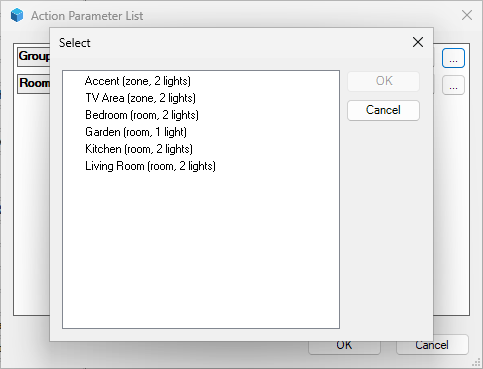
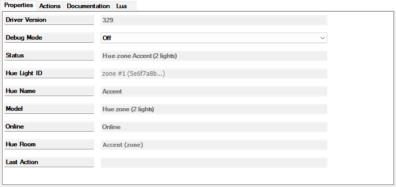

Owner's manual for the Hue Bridge, Hue Light and Hue Scene drivers. This page is the full manual; the Hue Light and Hue Scene devices carry a short page of their own that points back here.
This driver connects one Philips Hue bridge to your Control4 system over your own home network; no cloud account is involved and nothing leaves the house. Each Hue light you choose becomes an ordinary Control4 light that you can switch, dim, colour and program like any other light in the project, and so can a whole Hue zone or room: one light whose tile moves every lamp in it at once (chapter 7). Changes made in the Hue app or with Hue switches and dimmers show up in Control4 within a second or two, because the driver listens to the bridge's event feed (the bridge's running report of everything that changes) rather than asking it over and over. Hue scenes, the saved looks you create for a room in the Hue app, can become Control4 dimmers: turning one on plays the scene, turning it off turns that Hue room or zone off, and its slider brightens or dims the room or zone while keeping the scene's look. Hue's time-of-day scenes, such as Golden hours and Natural light, can become such dimmers too; turning one on starts its schedule (9.11). The driver never adds, renames, moves or removes a Control4 device on its own, with two small exceptions it tells you about: the one-time Map Rooms By Name it runs when it first sees the bridge's rooms (chapter 6), and the re-adoption of a device that announces a light the bridge already knows (8.6). Every other change is a button you click in Composer, and the driver reports in plain words what it did.
Two words this manual uses throughout: a light is a Hue light, the bulb, strip or lamp as the Hue app lists it; a Hue Light, with a capital L, is the Control4 device that stands for it. A Hue Light can also stand for a whole Hue zone or room; this manual then calls it a zone light or a room light. Navigators is Control4's word for everything you control the house from: touch screens, remotes and the Control4 app. A short glossary of the other terms is at the end of this manual.
| Device | How many | In Composer | On Navigators |
|---|---|---|---|
| Hue Bridge | One | A device in any room you like (an equipment room or the room the bridge sits in). Its Properties page shows the status of the connection and the counts of lights and scenes; its Actions tab holds every command described in this manual. | Not shown. The bridge has no user interface of its own. |
| Hue Light | One per Hue light you import, and one per Hue zone or room you add as a light | A light in a room, with the Hue light's name. Normally created only by the bridge's Add Light and Import All New Lights actions; one added by hand has to be connected and linked (8.6). The same device type stands for a whole Hue zone or room when Add Zone Light created it (chapter 7): a zone light, named after the zone (Accent), or a room light, named Living Room Lights. | Appears on the room's Lighting page like any dimmer: a tile for on and off and a brightness slider; lights that can do colour or colour temperature also get the colour controls. A zone or room light's tile, slider and colour controls move every lamp of the zone or room at once. |
| Hue Scene | One per Hue scene you import | A dimmer in a room, named after the Hue scene (with the zone's name in front for a zone scene). Created only by Add Scene and Add All Scenes Of Room. | A tile with a slider on the room's Lighting page. On plays the scene; off turns the scene's Hue room or zone off; the slider brightens or dims the room or zone, keeping the scene's look. |
In Composer's System Design tree the Hue Bridge sits in its room like any other device, and the lights and scenes it creates sit in the rooms you chose for them. You can drag a Hue Light or Hue Scene to another room at any time; that does not disturb its link to the bridge.
Icons. The Hue Bridge shows a small dark Hue Bridge Pro, in the tree and in a room's List View. In the tree a Hue Light shows a Hue dimmer switch and a Hue Scene the same switch with its buttons lit in colours. Composer fixes a device's tree icon when the device is created: a Hue Light or Hue Scene created by a build that already had these icons follows them, one created by an earlier build keeps Control4's standard bulb for good. In a room's List View every Hue Light and Hue Scene shows Control4's standard light icon.
Hue and Control4 organise a home differently. The table shows what each Hue construct becomes on the Control4 side, and the actions that create the link.
| In Hue | In Control4 | How |
|---|---|---|
| The Hue bridge | The Hue Bridge device | You add it once and pair it (chapter 4). Everything else is created from its Actions tab. |
| A light (a bulb, a strip, a lamp) | A Hue Light device: a Control4 light with dimming, and with colour and colour temperature when the light supports them | Add Light (one at a time, into a room you pick) or Import All New Lights (every new light into the room its Hue room maps to). A Hue fixture that contains several lights gives one Hue Light per light, each named as the Hue app names that light. |
| A Hue room or zone | A mapping to a Control4 room, listed in Room Mappings (chapter 6) | Map Rooms By Name (automatic for identical names, once) and Set Room Mapping (by hand). The mapping decides which Control4 room a newly imported light or scene lands in; it never moves anything afterwards. A zone is a group of lights that may sit in several rooms; Hue scenes belong to a room or a zone. |
| A Hue zone or room, as one thing to switch, dim and colour | A Hue Light device standing for the whole zone or room, a zone light or room light: one Control4 light whose tile, slider and colour controls move every lamp in it at once, with a single request to the bridge | Add Zone Light (one at a time, into a room you pick or the zone's mapped room; chapter 7). A zone light is named after the zone, Accent; a room light Living Room Lights. Never created by an import. The zone's scenes can be Hue Scene devices beside it (9.4). |
| A scene | A Hue Scene dimmer device | Add Scene or Add All Scenes Of Room. ON plays the scene; OFF turns the scene's room or zone off; the slider brightens or dims the room or zone. |
| A time-of-day scene, such as Golden hours or Natural light (Hue calls them smart scenes) | A Hue Scene dimmer device, as for a scene | Add Scene, which lists it as Bedroom: Natural light (time-based), or Add All Scenes Of Room. ON starts the schedule with the current time slot's look; OFF stops it and turns the room or zone off; the slider brightens or dims the room or zone while the schedule keeps running (9.11). |
| The names of lights and scenes | The device names in Composer | Given once when the device is created (for a time-of-day scene without the number the Hue app adds, 9.11). Afterwards the Composer name is yours; a difference (compared with the name the bridge would give the device today: the light's name as the Hue app shows it, the zone's name in front for a zone scene, Lights after a room light's, the Hue app's number dropped) is only pointed out in Attention and resolved with Adopt Hue Names or Accept Names As They Are (or Adopt Hue Name on one device). |
| Which light is which | The link between a device and its Hue light | Kept by the bridge, by the light's Hue identity (the long code the bridge gives every light). A replaced light is re-pointed with Re-link Device To Light; a device is released with Forget Light; a device you connected yourself is picked up with Link Devices. |
Everything in this manual happens in Composer Pro, connected to your controller. The places it refers to:
Are you sure you want to delete the item '…'? and deletes it on Yes.shared queue, Stream Timeout (s) is capped at 60 and a command can wait up to a minute behind the feed. If your bridge has such an address, give it another one in the router. Addresses are IPv4 only: four numbers and dots, no name.hue_bridge.c4z, hue_light.c4z and hue_scene.c4z from the same build. Each build has a number (116, 125, …) that the three files share and that the devices show as Driver Version once installed; the developer tells you the number with the files.Update Succeeded: Drivers or agents were successfully added: hue_bridge.c4z, hue_light.c4z, hue_scene.c4z.Hue Bridge. The search also finds Control4's own Hue drivers; the one you want is the Hue Bridge by manufacturer Philips Hue with the model text Hue Bridge (CLIP v2). Double-click it: one Hue Bridge device appears in the room.
Composer's Driver menu with Add or Update Driver or Agent… highlighted: the one route used both for installing and for updating.
(No screenshot of the System Design tree is included: it would show one home's device inventory. Yours shows the Hue Bridge in the room you added it to.)
Select the bridge and open its Properties tab. Before pairing the page reads like this:
116.Enter the bridge IP address.Not paired.0 imported; Scenes: 0 imported; Zone Lights: 0 imported.None; Room Mappings: None; use Map Rooms By Name.0; Stream Timeout (s): 3600; Stream Watchdog (s): 600.Chapter 4 fills in the rest; chapter 5 explains every row.
Updates go through the same Driver » Add or Update Driver or Agent… menu: select all three new files at once, as for the first installation. Composer answers Update Succeeded: Drivers or agents were successfully updated: hue_bridge.c4z, hue_light.c4z, hue_scene.c4z and pushes the new version to every existing device: the bridge and every Hue Light and Hue Scene show the new Driver Version within a minute, the bridge restarts and its event feed is back within seconds, and the pairing, the lights and the scenes are untouched. That is all, unless Composer asks the question below.
Restart Director?, reboot the controller. Some builds change what a device type can do in Control4, its capabilities; build 160, for example, turned the Hue Scene from an on/off switch into a dimmer. Installing such a build makes Composer ask Restart Director?. Answering Yes does not restart Director: the driver whose capabilities changed keeps running its old code, and its devices keep showing the old Driver Version, until the controller itself is rebooted. To reboot it, open System Manager (in Composer, Tools » System Manager; it needs administrator rights on the computer), right-click the controller and reboot it. Composer loses its connection and is back a few minutes later (about seven and a half minutes once on the house system). Then check Driver Version on the bridge, on one Hue Light and on one Hue Scene, and choose File » Refresh Navigators so the touch screens and the app pick up what changed. For up to a minute after the reboot a Hue Light or Hue Scene may read Not bound to a Hue Bridge; it corrects itself (8.7). An update during which Composer does not ask the question takes effect at once and needs no reboot.Not bound to a Hue Bridge until connected and linked again by hand (8.6). Updating in place keeps everything.If you ever need to reload the same version, right-click the bridge and choose Update Driver; Composer asks Versions are equal. Do you want to overwrite…? and reloads it on Yes. For anything newer, use the menu route above. Neither route helps a device that kept its old code after a Restart Director? question; only the reboot does.
Going back to an older build uses the same menu with the older files. This has not been tested; expect the devices to keep their pairing and links as they do on an update, and read Status and Lights afterwards rather than assume.
Release and development builds. The developer sometimes makes development builds that fetch their code from a server on the home network; they carry two extra properties (Dev Server, Diagnostic Server) and three extra actions (Connection Test, Reload Credentials, Check CA Pinning). A release build shows none of them, so a bridge whose Properties page has a Dev Server row is running a development build and should be replaced with the release files through the menu above.
Open the Hue app on your phone: Settings » My Hue system » tap the bridge. Its IP address is listed there, for example 10.0.2.143. Reserve that address for the bridge in your router if you have not done so; the driver has to be told by hand when the address changes. If the address has no number below 8, change it in the router first (chapter 3, "What you need").
On the bridge's Properties page, click in the value cell of Bridge IP Address, type the address, for example 10.0.2.143, and click the row's Set button. Status changes to Not paired: press the link button, then run Pair Bridge.
The address must be four numbers from 0 to 255 separated by dots, written without leading zeros (10.0.2.143, not 10.000.002.143), and not a name. Before pairing, an invalid entry only makes Status read Enter the bridge IP address (an address entered earlier is dropped); correct the text and click Set again. While paired, an invalid entry is not harmless: the driver drops the stored address, Status returns to Enter the bridge IP address, the event feed stops (Event Stream reads Stopped) and the lights stop following the bridge until a valid address is set again. The pairing itself is kept, so once a valid address is set again the feed reconnects by itself within seconds and everything is back.

A property row after editing: the Set and Cancel buttons at the right end of the row, and only Set hands the change to the driver.
Pairing: contacting bridge, then Pairing: found Hue Bridge Pro (BSB003) 001788fffe123abc, requesting key (the model with its id, then the bridge's identifier; a square version 2 bridge reads Hue Bridge v2, square (BSB002)), then for a moment Checking the bridge at 10.0.2.143 before anything is sent while the driver confirms the bridge's identifier and makes the TLS check (chapter 12, "The TLS check"), then Paired. Bridge ID, Bridge Model, Bridge Name (the bridge's own name from the Hue app) and Bridge Firmware fill in. The pairing is a key the bridge issued to this controller; the driver stores it and never shows it.If you clicked before pressing the button, or too long after it, then Status reads Press the link button on the bridge, then run Pair Bridge again; press the button and click Pair Bridge once more. If Status reads Enter the bridge IP address first, step 2 was skipped. Three failures start with Pairing failed: followed by the reason: Pairing failed: No Hue bridge answered at … means nothing usable answered at that address (check the address in the Hue app and that bridge and controller are on the same network); Pairing failed: No usable answer to the key request: … means the bridge answered the first question but not the pairing request itself (try again; if it persists, check that the address really is a Hue bridge); Pairing failed: bridge error … means the bridge refused with an error of its own (try again after a moment, and after a restart of the bridge if it persists). Rarer answers are Pairing failed: the bridge answered without a usable application key, Pairing failed: unexpected response and Pairing failed: empty response; try again. Four more refusals come before any key is asked for: Pairing failed: Bridge at 10.0.2.143 reports ID 001788fffe456def, expected 001788fffe123abc; run Forget Pairing first to pair with another bridge (the bridge at the address is not the paired one; see Forget Pairing below), Pairing failed: This is a Hue Bridge v1, round (BSB001): … (the round first-generation bridge, which this driver cannot use), Pairing failed: The device at … is not a Hue bridge (model …) (the address belongs to something else), and Pairing failed: Bridge firmware … is older than 1948086000, … (update the bridge in the Hue app, then pair again).
Right after Paired the driver opens the bridge's event feed. Event Stream shows Connecting, then Connected since 14:03:12, and from the first event onwards Connected since 14:03:12, 12 containers, last 14:03:40; a container is one bundle of changes the bridge sent, and Events Received counts the same bundles. Within a few seconds the driver has done its first full read of the bridge's lights, rooms, zones and scenes:
8 on bridge, 0 imported, 8 new, 0 missing, 0 unbound, 0 deleted, Scenes 43 + 1 time-based on bridge, 0 imported, 0 deleted and Zone Lights 2 zones, 4 rooms on bridge; 0 imported.8 new lights on the bridge: Lamp 1 [Living Room] #1, Lamp 2 [Living Room] #2, Lamp 3 [Kitchen] #3 +5 more (Add Light or Import All New Lights).Nothing has been added to the project yet. Chapters 6 and 7 are the next steps.

The Hue Bridge Properties page after pairing. Look at Status Paired, Bridge ID and Bridge Model filled in, Event Stream Connected since …, and the Lights and Scenes count lines. The exact Stream Address text depends on your bridge's address (chapter 5). The picture is from an early development build: a release build has no Dev Server or Diagnostic Server rows, has a Zone Lights row after Scenes, and words Scenes, Stream Address and Room Mappings as chapter 5 describes. Chapter 5 explains every row.
Test Connection on the Actions tab asks the bridge one question and writes the answer to Status: briefly Testing: GET /clip/v2/resource/bridge via 10.0.2.143, then Test OK: HTTP 200 via 10.0.2.143 in 0 s, bridge 001788fffe123abc. The three-digit numbers in these texts are the bridge's reply codes: 200 means the bridge answered properly, 401 or 403 that it refused the pairing key, 404 that the thing asked for no longer exists. The question carries the pairing, so it goes only to a bridge that has passed two checks: the driver asks the bridge at the address for its identifier, a question without the pairing, and then makes the TLS check (chapter 12, "The TLS check"). The driver makes both at every start and after a change of Bridge IP Address; if they have not passed since, the test makes them first (Status reads Testing: checking the bridge identity first meanwhile). A different bridge at the address ends the test with Bridge at 10.0.2.143 reports ID 001788fffe456def, expected 001788fffe123abc; nothing is sent until the address is corrected (it receives nothing that carries the pairing), and a failed TLS check with TLS check failed: nothing is sent (see Attention); a test clicked after that sends nothing and says Test refused: TLS check failed; nothing is sent (see Attention). A device at the address that is no bridge this driver can use ends it with Bridge at 10.0.2.143 is a …: no CLIP v2 API; nothing is sent (chapter 12). When nothing answers, Status reads Bridge at 10.0.2.143 not reachable (…); checking again in 30 s, or TLS check inconclusive (…): nothing is sent; checking again in 30 s when only the TLS check went unanswered (chapter 12); the driver asks again every 30 seconds, and the test goes ahead by itself once both checks pass. Once the bridge has passed, three failures are possible: Test failed: key rejected (HTTP 403). Re-pair with Pair Bridge (the bridge no longer accepts this pairing, see 8.8; a bridge that answers 401 shows that number instead), Test failed: bridge reports ID …, expected … (the answer names another bridge) and Test failed: … with the reason: a network error when nothing answers, or another reply code such as HTTP 503. When not paired it says Not paired. If the test succeeds while the driver had stopped because the bridge refused the pairing (Key rejected by the bridge …, 8.8), the bridge accepts the pairing again: the driver ends that stop by itself and the feed reconnects. Otherwise the test leaves the normal connection alone.
Forget Pairing removes the stored pairing from the controller and stops the event feed. Status returns to Not paired: press the link button, then run Pair Bridge (the address is kept), Event Stream reads Stopped, Bridge ID, Bridge Model, Bridge Name, Bridge Firmware, Stream Address and Last Event are cleared and Events Received returns to 0. The Hue Light and Hue Scene devices stay in the project and keep their links; they simply stop following the bridge until you pair again, and a command given to them meanwhile is dropped, not kept for later. Pair with the same bridge and everything resumes (the links are expected to survive; this has not been exercised on the house system, so read Lights afterwards). Forget Pairing is needed only to pair with a different bridge. Pair Bridge compares the identifier of the bridge at the address with the stored one before it asks for a key: the same bridge pairs again at any time (after a reset of the bridge, say, or at a new address) and keeps every link, while a different bridge is refused with Pairing failed: Bridge at 10.0.2.143 reports ID 001788fffe456def, expected 001788fffe123abc; run Forget Pairing first to pair with another bridge and receives nothing, because the links of your devices belong to the paired bridge. Nothing else changes: the pairing, the feed and the rows stay as they were. After Forget Pairing the other bridge pairs, and then every Hue Light and Hue Scene whose light or scene that bridge does not have reads Gone until re-linked (8.8).
If the bridge is unplugged, rebooting or unreachable then the feed ends. The driver notices when the bridge closes it, or when Stream Watchdog (s) passes without a word from the bridge (Disconnected: watchdog: no data for 600 s. Reconnecting in 1 s; in a quiet house it can take until the connection's Stream Timeout (s), chapter 5). While the bridge does not answer, Event Stream reads Disconnected: transfer error 28: …. Reconnecting in 2 s or similar (the number is the controller's error code, 28 meaning "no answer in time"; the reason after it varies. Error 28 is also how a connection that reached Stream Timeout (s) ends, once an hour by default, so one such line followed by a fresh Connected since is normal), and the driver retries with a growing pause, doubling from 1 second up to 60 seconds between attempts. As soon as the bridge is back, Event Stream reads Connected since … again and the driver does a full read of every light and scene, so Control4 catches up with whatever happened while it was blind. You do nothing. Meanwhile:
If the bridge receives a new address from the router then the feed drops and keeps failing: Event Stream cycles through Disconnected: …. Reconnecting in 60 s and Connecting, and Test Connection fails with a network error (Test failed: …; once the driver has restarted, Status reads Bridge at … not reachable (…); checking again in 30 s instead). Look up the new address in the Hue app, type it into Bridge IP Address and click Set. The pairing is kept, because it belongs to the bridge and not to the address: Status reads Checking the bridge at … before anything is sent (with the new address) while the driver confirms that the bridge there is the paired one, then Paired again, and the feed reconnects within seconds, also when it had stopped because the bridge refused the pairing. Then reserve the address in the router so it does not happen again.
In the order Composer shows them. "You" means you may edit it (remember the Set button); "read-only" means the driver writes it; "developer" means it exists for the developer's diagnostics and should be left alone.
| Property | Who | What it shows or does |
|---|---|---|
| Driver Version | read-only | The build number of the installed driver, for example 116. The three drivers of one build share it. |
| Debug Mode | developer | Off (default) or On. On makes the driver write many more lines to its Lua output (the Lua tab). Turn it on only when asked for diagnostics, and off again afterwards. |
| Status | read-only | The pairing state: Enter the bridge IP address, Not paired: press the link button, then run Pair Bridge, Checking the bridge at … before anything is sent for a moment at every start, after a change of Bridge IP Address and after pairing, Paired once the bridge has passed those checks (only then does anything that carries the pairing go out), Key rejected by the bridge (HTTP 403): re-pair with Pair Bridge when the bridge no longer accepts the pairing (8.8), TLS check failed: nothing is sent (see Attention) or TLS check inconclusive (…): nothing is sent; checking again in 30 s (chapter 12, "The TLS check"), Bridge at … reports ID …, expected …; nothing is sent until the address is corrected, Bridge at … is a …: no CLIP v2 API; nothing is sent or Bridge at … not reachable (…); checking again in 30 s when the bridge at the address could not be confirmed (chapter 12; these stay until the check passes, also when the same address is set again), the pairing steps of chapter 4 and the result of Test Connection. |
| Bridge IP Address | you | The bridge's address on your network, for example 10.0.2.143; four numbers and dots, no name. The only setting the driver needs from you. |
| Bridge ID | read-only | The paired bridge's identifier, 16 letters and digits such as 001788fffe123abc; blank while not paired. Before anything that carries the pairing is sent, the driver compares the answering bridge against it, at every start and after a change of Bridge IP Address; Test Connection compares it too, and Pair Bridge refuses a bridge with another identifier until Forget Pairing. |
| Bridge Model | read-only | The model with its friendly name: Hue Bridge Pro (BSB003), Hue Bridge v2, square (BSB002); a newer model reads Hue bridge BSB… (untested model), and a device that is not a Hue bridge its model followed by (not a Hue bridge). Read at pairing, at every start and after a change of Bridge IP Address. |
| Bridge Name | read-only | The bridge's own name as the Hue app shows it, for example Philips hue. |
| Bridge Firmware | read-only | The bridge's software version and API version, 1968096020 (API 1.68.0); when the software is older than the first with the CLIP v2 API it ends in ; older than 1948086000, update the bridge in the Hue app. Refreshed at every start and after a change of Bridge IP Address, so an update shows after the next start. |
| Event Stream | read-only | The state of the event feed: Not paired, Waiting for IP address, Not connected: bridge identity not verified yet (at a start, after a change of Bridge IP Address and after pairing, until the bridge has passed the identity check and the TLS check; Status says why if it lasts), Connecting, Connected since 14:03:12, Connected since 14:03:12, 128 containers, last 14:40:01, Disconnected: <reason>. Reconnecting in 2 s, Waiting for an earlier stream transfer to close, Stopped, Not connected: TLS check failed when the TLS check failed, Not connected: key rejected when Connect Event Stream was clicked while the driver had stopped for that reason (chapter 12), or Stopped: key rejected (HTTP 403) when the bridge refused the pairing (8.8; Pair Bridge or a Test Connection that succeeds reopens the feed; a new Bridge IP Address ends the stop too, and the feed reopens by itself once the bridge there has passed the checks). The waiting text means that the driver keeps at most two connections to the feed open, counting one it gave up on that the controller has not closed yet; a new connection waits, and tries again with the growing pause, until the earlier one closes at the bridge's next event or at that connection's Stream Timeout (s). Once the feed has reconnected since the driver started, the row also counts the reconnections: Connected since 23:11:46 (2 reconnects since 10-25 23:11) at the connection, two since the feed's first connection on 25 October at 23:11, and Connected since 23:11:46, 120 containers, last 23:40:02; 2 reconnects once events arrive. In a quiet house a reconnection after ten quiet minutes, and one at the end of every Stream Timeout (s), is normal (see Stream Watchdog (s)); the count shows how often it happens. |
| Lights | drop-down, for reading | The row shows the counts: 8 on bridge, 1 imported, 6 new, 0 missing, 0 unbound, 1 deleted; just 0 imported before the first full read of the bridge. Open the list and every light on the bridge is a line of its own, by Hue room: Living Room: Lamp 1 → device 1201, Kitchen: Lamp 3 (new), (no room): Lamp 7 (new), Bedroom: Lamp 8 (deleted from Composer 2026-10-22), and when it happens … (missing; device …) or … (unbound; device …). To read a list, open it and close it with Escape; if you pick a line, Composer shows Set and Cancel, and after Set the row returns to the counts (a read-only list would be greyed out and could not be opened at all, which is why these lists are left editable). Composer's lists are comma-delimited, so on this row and the other list rows (Room Mappings, Scenes, Zone Lights), and in their lists, every comma is shown as ‚, a low quotation mark that looks like one: 8 on bridge‚ 1 imported‚ …. This manual writes ordinary commas. Chapter 7 explains each number. |
| Attention | read-only | None, or one item per kind of thing waiting for you, joined by semicolons: a failed TLS check of the controller first (chapter 12, "The TLS check"); then new lights, missing lights, unbound devices, two devices claiming one light, name differences, mappings to a deleted Control4 room and lights offline for more than a day; then missing, unbound, doubly claimed and renamed scene devices, and the same four for zone and room lights (8.10). Each item names at most three things and then says +N more; most end with the action that resolves them. Chapter 12 lists them all. |
| Last Action | read-only | The result of the last button you clicked on the Actions tab, in words, for example Added Lamp 1 #1 to Living Room (device 1201). Every click on an action with a dialog, and every list action, ends here, whether it worked or not, and so does the answer to a device's own Forget This Light or Forget This Scene; Pair Bridge and Test Connection report in Status, the two event-stream actions in Event Stream, and Forget Pairing in both (chapter 13). A long result continues on the rows Last Action (2) to (6) right below, which appear only while they are needed; the text is wrapped at about 70 characters, so nothing is lost to the width of the column. A result longer than six rows ends in … (Lua output); the Lua output holds it in full. The (device 1201) in the bridge's texts is the number of the device's driver; the light that Composer shows for the same device has the next number, and so do the device's own actions (Renamed device 1202 to …). On OS 3.4.2 the two numbers for one device always differed by one. |
| Room Mappings | drop-down, for reading | The row shows a summary, 6 Hue rooms and zones; 2 unmapped (open the list to read); open the list and every Hue room and zone is a line of its own with the Control4 room it maps to: Kitchen → Kitchen, Garden → (unmapped), Accent (zone) → Living Room. Picking a line changes nothing; the row returns to the summary. None; use Map Rooms By Name while nothing is mapped. Chapter 6. |
| Scenes | drop-down, for reading | The row shows the scene counts, ordinary and time-of-day scenes together: 43 + 1 time-based on bridge, 1 imported, 0 deleted (43 + ? time-based until the time-of-day scenes have been read once), with 1 missing and 1 unbound added only when they are not zero (Attention lists them then); 0 imported before the first full read. Open the list and every scene on the bridge is a line, by room or zone, time-of-day ones first: Bedroom: Natural light (time-based), Bedroom: Bright (in Natural light), Living Room: Relax → device 1205, and when it happens … (missing; device …), … (unbound; device …) or … (deleted from Composer 2026-10-22); a scene without a device carries no mark. Chapter 9. |
| Zone Lights | drop-down, for reading | The row shows the zone and room lights (chapter 7, "Adding a zone or room as a light"): 2 zones, 4 rooms on bridge; 1 imported, with , 1 missing, , 1 unbound or , 1 deleted added only when they are not zero (Attention lists them then). Open the list and every zone, then every room, is a line: Accent (zone; 2 lights) → device 1203, Kitchen (room; 2 lights), and when it happens … (zone; no lights), … (unbound; device …), … (deleted in Hue; device …) or … (deleted from Composer 2026-10-24). Lights counts lights only. |
| Stream Address | developer, read-only | Which spelling of the bridge's address the event feed uses and whether the feed has a connection queue of its own (chapter 3, "What you need"). For 10.0.2.143, which has two numbers below 8, it reads 10.000.002.143 (own queue, spelling 1 of 7) at first, and the number advances at every reconnect; an address with a single number below 8, such as 198.51.100.5, reads 198.51.100.005 (own queue, the only spelling). The commands keep using the address in Bridge IP Address. An address with no number below 8 reads 198.51.100.50 (shared queue with commands: no octet below 8 to pad), and a start-up check that failed reads … (shared queue with commands: self-check failed) (the reason is in the Lua output): the feed then shares the commands' queue and Stream Timeout (s) is capped at 60 whatever it says. Informational only. |
| Events Received | read-only | How many bundles of changes the feed has delivered since it was last set up (a driver start, a change of the stream settings or the address, or pairing). It rises whenever something changes on the Hue side; a good sign that the feed is alive. This row, Last Event and the … containers, last … part of Event Stream are updated at most once a second: during a burst of changes (a dynamic scene playing, say) they can trail the bridge by up to a second, and the last value always arrives. |
| Last Event | read-only | The time of the last event, for example 14:40:01; updated at most once a second, like Events Received. |
| Stream Timeout (s) | you (rarely) | How long one connection to the event feed may live before the driver deliberately reopens it and does a full read; 30 to 86400 seconds, default 3600 (an hour: each reopening re-reads the whole bridge, so it is kept rare; the watchdog catches a feed that went quiet). Each reopening is harmless. On an address with no number below 8 the driver caps it at 60 whatever you set (see Stream Address). Leave the default unless the developer suggests otherwise. |
| Stream Watchdog (s) | you (rarely) | After this many seconds without any event the driver assumes the feed has gone quiet for a bad reason and reopens it; 60 to 3600 seconds, default 600. The watchdog cannot be switched off: a value below 60, such as one kept from an older build, works as 60. The bridge sends nothing while nothing changes. The controller cannot close a quiet feed it has given up on (it stays open until its next event or its Stream Timeout (s)), and it runs only four such connections at once, so the driver reopens the feed only while no earlier one may still be open: in a quiet house Event Stream shows a fresh Connected since time after the first ten quiet minutes, then keeps it until something changes; that is expected. |

The bridge's Actions tab: the actions in the order of chapter 13's quick reference, Pair Bridge at the top and Forget Pairing at the bottom, 22 buttons in all. One click on a button runs it. Actions with choices open a dialog; the rest run at once and report in Last Action or Status.
Actions that take choices open Composer's Action Parameter List dialog: one row per choice, each with a … button that opens a Select list, and OK and Cancel. In the Select list, click an entry and then its OK. A row left empty reaches the driver empty: an empty Room in Add Light, Add Zone Light or Add Scene means (mapped room); any other empty row, Set Room Mapping's Room included, is refused with a Not …: pick … text in Last Action (for example Not added: pick a light first or Not re-linked: pick a device and a light; chapter 12 lists them all). The dialog remembers your previous choices for that action, so always look at every row before clicking OK; a remembered choice is as good as a new one to the driver.
Before importing anything, tell the driver which Control4 room each Hue room stands for. The mapping has one job: when a light or scene is created, it goes into the Control4 room its Hue room maps to, unless you pick a room yourself. The mapping never moves an existing device, and changing a mapping later changes only where future additions land. That is deliberate: Control4 offers no way for a driver to move a device, and a device you dragged somewhere on purpose should stay there.
Room Mappings is a drop-down list. Its row shows a summary, for example 6 Hue rooms and zones; 2 unmapped (open the list to read). Open the list and every Hue room, then every Hue zone (marked (zone)), is a line of its own with an arrow to its Control4 room:
Bedroom → BedroomGarden → (unmapped)Kitchen → KitchenLiving Room → Living RoomAccent (zone) → Living RoomTV Area (zone) → (unmapped)
Picking a line does nothing: the list is there to be read, and the row goes back to the summary. (Composer shows a property value on one line of about 75 characters and clips the rest, which is why the mappings are a list and not one long line.)
(unmapped): no Control4 room chosen yet. Lights in that Hue room are skipped by Import All New Lights and need a room picked in Add Light. A room or zone you create in the Hue app appears here as (unmapped) by itself; map it with Set Room Mapping or click Map Rooms By Name.(Control4 room gone): the mapping points at a Control4 room that has since been deleted from the project, for example Kitchen → (Control4 room gone). Attention says 1 room mapping points at a Control4 room that no longer exists: Kitchen (Set Room Mapping); fix it with Set Room Mapping.Playroom (deleted in Hue) → Den; remove it with Set Room Mapping and (no mapping), or leave it, it does no harm.None; use Map Rooms By Name: nothing is mapped yet.Mappings are kept by identity, not by name: renaming a Hue room in the Hue app or a Control4 room in Composer leaves its mapping in place, and the line simply shows the new name.

The Room Mappings drop-down, open: the summary on the row, then one line per Hue room or zone, Hue on the left of each arrow, the Control4 room, (unmapped) or (Control4 room gone) on the right.
To read all of a long value, widen the Properties pane, or click Map Rooms By Name and read its result in Last Action.
Map Rooms By Name maps every Hue room or zone to the Control4 room with exactly the same name (capitals and spaces at the ends do not matter) and leaves everything else alone: it never changes a mapping that exists, and it skips a name that two Control4 rooms share. The driver runs it once by itself the first time it reads the bridge's rooms after installation; you can click it again whenever you have created or renamed rooms on either side. Last Action reports, for example:
Mapped 3: Bedroom → Bedroom, Kitchen → Kitchen, Living Room → Living Room; no Control4 room named: Garden, Accent (zone), TV Area (zone)
and on a later click, with nothing changed, Nothing new to map; 3 already mapped (kept); no Control4 room named: Garden, Accent (zone), TV Area (zone). A name that two Control4 rooms share is left alone and reported as, for example, ambiguous: Bedroom (2 Control4 rooms are named Bedroom). If it reports Nothing mapped: no Hue rooms fetched yet (connect the event stream and try again), the bridge has not been read yet: wait for Event Stream to say Connected since. Nothing mapped: no Control4 rooms found in the project means Composer's room list was not available at that moment; try again.
Set Room Mapping maps one Hue room or zone by hand, or removes a mapping. Its dialog has two rows:
Kitchen → Kitchen, Garden → (unmapped), Accent (zone) → Living Room. Pick the one to change.(no mapping) first, then every Control4 room as Floor / Room, for example Main Floor / Den. Where two rooms share a name the room's number is appended so you can tell them apart.
The Set Room Mapping dialog with the Hue Room list open: rooms first, zones after them, each with its current mapping after the arrow.

The same dialog with the Room list open: (no mapping) at the top, then the project's rooms as Floor / Room.
Example: pick Garden → (unmapped) and Main Floor / Den, click OK. Last Action reads Mapped Garden → Den and Room Mappings updates. To remove a mapping, pick the Hue room and (no mapping): Removed the mapping for Accent (zone), or No mapping for TV Area (zone) to remove when there was none. If you click OK without choosing, Last Action says Not mapped: pick a Hue room first or Not mapped: pick a Control4 room or (no mapping); a room deleted since the list was built gives Not mapped: Control4 room 31 does not exist. Before the bridge has been read, the Hue Room list holds only (no Hue rooms fetched yet; connect the event stream).
Zones. A Hue zone can be mapped like a room. A light's default room always comes from its Hue room (a light belongs to exactly one room in Hue), so a zone mapping is used for scenes and for zone lights: Add Scene and Add All Scenes Of Room put a zone's scenes into the zone's mapped room, and Add Zone Light puts its zone light there (chapter 7). For example map Accent (zone) to the Living Room, and its scenes and its zone light land there. A light that is in a zone but in no Hue room counts as (no Hue room): Import All New Lights skips it and Add Light needs a room picked for it.
Room Audit compares, for every imported light, the Control4 room it is in with the room its Hue room maps to (for a zone or room light, the room its zone or room maps to), and writes the differences to Last Action as a to-do list:
2 of 5 are not in the room their Hue room maps to: Lamp 3 is in Den; Hue says Kitchen → drag it to Kitchen in Composer if you want it there; Lamp 5 is in Living Room; Hue says Bedroom → drag it to Bedroom in Composer if you want it there
Nothing is moved for you; if you agree with a line, drag the device to that room in the System Design tree, then run the audit again and the line disappears. When everything agrees it reads All 5 linked lights in mapped Hue rooms are in the rooms their Hue rooms map to (the number is how many lights were checked, zone and room lights included; with a single light, All 1 linked light in a mapped Hue room is in the room its Hue room maps to). When no imported light is in a mapped Hue room it reads Nothing to audit: no linked light is in a mapped Hue room; before any mapping exists, No room mappings; use Map Rooms By Name or Set Room Mapping first. A line ending in mapped to a Control4 room that no longer exists (Set Room Mapping) means the mapping, not the light, needs fixing. A tail of ; 1 not found in the project means Composer's device list did not include one of the lights at that moment (usually a device being deleted); run it again later. Room Audit unavailable: the project lookup returned nothing (see the Lua output) means Composer's project information was not available; try again later. Running the audit changes nothing, so it is also a harmless way to make the bridge refresh its Attention line (see 8.2).
If you move a light to another Hue room in the Hue app, its Hue Room property follows within seconds; the Control4 device stays where it is, and the next Room Audit lists it until you drag it or decide not to.

Last Action after a Room Audit with nothing to drag: every checked light is in the room its Hue room maps to. With differences the row holds one line per light, each ending in the room to drag it to; the driver only reports, you drag.
Two actions create Hue Light devices. Both create each device already connected to the bridge, named as in the Hue app, with its capabilities (dimming, colour, colour temperature) set from what the light reports, and with its current state. Both refuse to create a second device for a light that already has one, so clicking twice is safe. A third action, Add Zone Light, creates a Hue Light that stands for a whole Hue zone or room; the last section of this chapter describes it.
Import All New Lights first reads the bridge's lights afresh, then adds every light that has no device yet, one at a time (under a second each on the house system, so a large import takes a while), each into the Control4 room its Hue room maps to. Two kinds of light are skipped on purpose and named in the result: lights with no mapped room (their Hue room is not mapped, is mapped to a Control4 room that no longer exists, or they are in no Hue room at all), and lights whose device you deleted in Composer (8.4 explains why). Last Action reads, for example:
Added 4 new lights: Lamp 2 #2 to Living Room (device 1207), Lamp 3 #3 to Kitchen (device 1209), Lamp 4 #4 to Kitchen (device 1211), Lamp 5 #5 to Bedroom (device 1213); skipped 2 with no mapped room (Set Room Mapping or Add Light): Lamp 6 #6 (Hue room Garden not mapped), Lamp 7 #7 (no Hue room); skipped 1 deleted in Composer (Add Light re-creates one): Lamp 8 #8 (deleted 2026-10-22)
A light whose Hue room is mapped to a deleted Control4 room is listed as … (Hue room … mapped to a Control4 room that no longer exists). When there is nothing to do it reads No new lights on the bridge (8 on bridge, 8 imported); when every new light was skipped, Added no lights; skipped …. If the bridge could not be read it reads Import failed: … with the reason; wait for Event Stream to say Connected since and click again. An import that stopped while creating devices ends in …; stopped early: … with the error that stopped it (the Lua output has the details); the devices created up to then are kept, so click again and it carries on where it stopped. AddDevice failed for 2: … names lights whose device Composer could not create (chapter 12). While an import or a full read of the lights is running, the other light actions are refused with Busy: importing; try again in a moment or Busy: resyncing; try again in a moment (resyncing is the driver's word for a full read); wait a few seconds, longer during a large import, and click again. A busy state that was never ended clears itself after 90 seconds.
Add Light adds one light into a room you choose. Its dialog has two rows:
Name [Hue room] #number, for example Lamp 3 [Kitchen] #3. The number is the light's number on the bridge (a light without one shows the first eight characters of its Hue identity instead); it tells two lights of the same name apart and appears in every text about that light. A light in no Hue room has no bracket: Lamp 7 #7. A light that looks like the replacement of a missing one is listed first with a hint, Lamp 5 [Bedroom] #9 (looks like Lamp 5 #5, device 1213; re-link?); lights whose device you deleted in Composer come last, as Lamp 8 [Bedroom] #8 (deleted from Composer 2026-10-22). When every light is imported the list holds only (every light on the bridge is imported); before the bridge has been read, (no lights fetched yet; connect the event stream).(mapped room) first, then every Control4 room as Floor / Room, for example Main Floor / Kitchen. Pick (mapped room), like any other entry, to use the Room Mappings entry of the light's Hue room; pick a room to put the light there regardless of the mapping.
The Add Light dialog with the Light list open: each entry is Name [Hue room] #number; lights deleted from Composer are listed last with the date. The row's inner OK is greyed out until an entry is clicked.

The same dialog with the Room list open: (mapped room) first, then Floor / Room rows.
Click OK. Last Action reads Added Lamp 1 #1 to Living Room (device 1201) and the device appears in that room in the System Design tree within a second. If you pick (mapped room) for a light that has no mapped room then nothing is created and Last Action explains which case it is: Not added: Lamp 6 #6: Hue room Garden not mapped; pick a room, or Set Room Mapping first, Not added: Lamp 7 #7: no Hue room; pick a room, or Set Room Mapping first or Not added: Lamp 6 #6: Hue room Garden mapped to a Control4 room that no longer exists; pick a room, or Set Room Mapping first; pick a room explicitly, or fix the mapping first. A light that already has a device is refused with Not added: Lamp 1 #1 is already imported (device 1201); an empty choice with Not added: pick a light first; a room deleted since the list was built with Not added: Control4 room 31 no longer exists; a light that left the bridge since the list was built with Not added: light … is not on the bridge (connect the event stream and try again).
(mapped room) again whenever you want the mapping rather than the room you chose last time.The new device goes into the room you picked (or the mapped room) and takes the light's name from the Hue app, for example Lamp 1; for a fixture with several lights, each device gets the name of its own light as the Hue app shows it under the fixture. From that moment the Composer name is yours: rename it as you like, and move it to another room as you like; neither touches the link to the Hue light. If the Hue name changes later, Attention will mention it (8.2), nothing more. Its Connections view shows the light's Hue Bridge input already connected to the bridge's Hue Lights output; you never have to make that connection for a device the bridge created. The device's properties are described in chapter 10, and what it does on Navigators and in programming in chapter 11. After an import, choose File » Refresh Navigators so the new lights appear on the touch screens.
Lights reads 8 on bridge, 1 imported, 6 new, 0 missing, 0 unbound, 1 deleted:
| Field | Meaning | What to do |
|---|---|---|
8 on bridge | Lights the bridge currently has. | Nothing. |
1 imported | Hue Light devices the bridge is managing (whatever their state). | Nothing. |
6 new | Lights on the bridge without a device, not counting lights whose device you deleted in Composer. | Add Light or Import All New Lights, or leave them out. |
0 missing | Devices whose light has disappeared from the bridge (deleted or replaced on the Hue side). The device itself reads Gone from the Hue bridge: "missing" in the counts and "gone" on the device are the same state. | Re-link Device To Light or Forget Light (8.3). |
0 unbound | Devices whose connection to the bridge was removed in Composer. | Connect it again in Connections, or Forget Light (8.6). |
1 deleted | Lights whose device you deleted in Composer; the driver remembers so that a bulk import does not bring them back. | Nothing, or Add Light to re-create one. |
Before the first full read of the bridge the line is simply 0 imported (or 1 imported after a restart), because the "new" and "missing" counts mean nothing until the bridge has answered.
A Hue zone is a group of lights you made in the Hue app, often to run a few lamps together: the Accent zone, say, holds two of the lamps of the larger Living Room. Add Zone Light makes such a zone, or a whole Hue room, into one Hue Light device, a zone light or room light: one tile in a Control4 room whose on, off, slider, colour and colour temperature go to every lamp of the zone or room with a single request to the bridge, and that shows what the zone or room is doing. To everything else in this manual it is an ordinary Hue Light: the same Properties and the same two actions (chapter 10), the same keypad behaviour (chapter 11), the same place in programming and Advanced Lighting Scenes. Zones and rooms are never added by themselves and there is no "add all zones": one click per zone or room, so that the project holds only the ones you want.
Its dialog has two rows:
Accent (zone, 2 lights), Living Room (room, 2 lights). A zone or room whose device you deleted in Composer comes after the others, its entry ending in (deleted from Composer 2026-10-24); one that holds no lights reads Reading Corner (zone, no lights) and is refused. When every zone and room has a device the list holds only (every zone and room on the bridge is imported); with no zone or room on the bridge at all, (no zones or rooms on the bridge). Hue's whole-home group ("all lights") is not offered (chapter 2).(mapped room) first, then every Control4 room as Floor / Room, exactly as in Add Light (pictured above). (mapped room) uses the Room Mappings entry of that zone or room itself: a Hue room is usually mapped already by Map Rooms By Name; a zone is mapped only if you mapped it with Set Room Mapping (chapter 6).
The Add Zone Light dialog with the Group list open: the zones first, then the rooms, each with the number of lights it holds.
Click OK. Last Action reads Added Accent (zone) to Living Room (device 1203) (a room reads, for example, Kitchen (room) in these texts) and the device appears in that room in the System Design tree within a second; choose File » Refresh Navigators afterwards. If you pick (mapped room) for a zone that is not mapped then nothing is created: Not added: TV Area (zone): Hue room TV Area (zone) not mapped; pick a room, or Set Room Mapping first; pick the room in the dialog, or map the zone first. A zone or room mapped to a Control4 room that has since been deleted is refused as a light would be (mapped to a Control4 room that no longer exists). A zone without lights answers Not added: Reading Corner (zone) has no lights; a remembered choice that already has a device, Not added: Accent (zone) is already imported (device 1203). The dialog remembers your last choices, as every dialog does: open both lists each time.
Names and properties. A zone light takes the zone's name as it is, Accent. A room light is named Living Room Lights, the room's name with Lights added, so that the Living Room's Lighting page does not list a light called "Living Room". As with lights the name is set once and is then yours; Attention and Adopt Hue Name apply the same rule, so a room light called Living Room Lights is never reported as differing from its Hue name. The device's Status reads Hue zone Accent (2 lights) or Hue room Living Room (2 lights); its Hue Light ID zone #1 (5e6f7a8b…), the zone's number on the bridge and the start of its Hue identity; Hue Name the zone's or room's name; Model Hue zone (2 lights); Hue Room the zone's own label, Accent (zone), or the room's name; Online Online. Composer shows the device's driver as Hue Light, with the Hue Light icon.

The Properties page of a zone light for the zone Accent: Status Hue zone Accent (2 lights), Hue Light ID zone #1 (5e6f7a8b…), Model Hue zone (2 lights) and Hue Room Accent (zone).
What the tile does. The zone light is on while any lamp of the zone is lit, and its slider shows the brightness of the lit lamps as Hue reports it, their average in whole percents; 0 % while all are off.
Hue zone Accent has no lights; nothing to control with Online Offline, its tile is disabled and commands are dropped; put a lamp back and it is Online again, nothing to click. The zone light is not counted as missing, because the zone still exists (8.10).A room light is the one-request way to switch a whole Hue room (chapter 11, "Whole-room and whole-house commands"), and the natural thing to put on a wall keypad. A zone light and the Hue Scene devices of the same zone work side by side; 9.4 says what each tile shows. The bridge's Zone Lights row counts the zone and room lights the way Lights counts lights: 2 zones, 4 rooms on bridge; 1 imported, with , 1 missing, , 1 unbound or , 1 deleted added only when not zero; Lights itself does not count them. Renames, a zone deleted in Hue, a device deleted in Composer: 8.10.
Over the years lights get replaced, names change on one side or the other, devices get deleted by mistake, bridges get reset and projects get restored. This chapter walks through each case. The rule behind all of them: the Control4 device is the thing your programming refers to, so the driver keeps devices and re-points their links instead of deleting and re-creating, and it does nothing on its own that would make a later fix harder. What needs you is listed in Attention until you deal with it; nothing is lost by waiting.
Turn a light on in the Hue app, press a Hue dimmer switch, or let a Hue automation run: the Control4 light follows within one to two seconds (the bridge bundles its reports, about one bundle a second), and Events Received on the bridge ticks up. The other way round, a tap in Control4 reaches the light within about a second and the tile then shows the level Hue confirms. If you switch a light off at its wall switch (cutting its power) then Hue needs a while, sometimes minutes, to notice; the device's Online then reads Offline and the tile is disabled on Navigators (greyed out, it cannot be used) until the light has power again. When power returns the light comes back on its own and Online returns to Online. A light offline for more than a day is mentioned in Attention: 1 light offline for more than 24 h: Lamp 3 #3; that day is counted from the moment the driver, since its last start, first saw the light offline, so after a controller restart or a driver update it starts over. A light that connects to the bridge over Wi-Fi or Matter rather than Zigbee never reports reachability, so its Online stays blank; that is harmless.
Names are never changed behind your back on either side. When the Hue name and the Composer name of a device differ, Attention says so. For a light, the Hue name is the light's name as the Hue app shows it, the name the device was given when it was created (chapter 7), so a newly added light never differs. A device renamed in Composer is reported within a few seconds, because the bridge listens for Composer's rename. A light renamed in the Hue app is reported the next time the bridge refreshes its rows: at its next full read (after the feed reconnects), when something is added to or deleted from the bridge, or as soon as you run any action on the bridge's Actions tab; Room Audit is a harmless one to click for that. For a device renamed in Composer from Lamp 1 to Reading Lamp the line reads:
1 Hue name differs from the Composer names: Reading Lamp is Lamp 1 in Hue (Adopt Hue Names or Accept Names As They Are)
(With several differences it reads 2 Hue names differ from the Composer names: ….) You have three ways to answer:
Renamed 1 device: Reading Lamp → Lamp 1 (device 1201) | Scenes: No Composer names differ from the Hue scene names | Zone lights: No Composer names differ from the Hue zone and room names, or No Composer names differ from the Hue names when there is nothing to do. A device it could not rename is listed after a semicolon as not renamed 1: Reading Lamp (device 1201): no proxy id known or …: rename failed: …; try again after a minute, and after a controller restart if it persists.Accepted 1 name difference: Reading Lamp (Hue: Lamp 1) | Scenes: No Composer names differ from the Hue scene names | Zone lights: No Composer names differ from the Hue zone and room names. The driver remembers the Hue name it accepted: if that light is renamed again in the Hue app the difference is reported again, but a further rename of the device in Composer is not.Renamed device 1202 to Lamp 1 (the device's own actions use Composer's number for it, one higher than the bridge's, see chapter 5).Scene devices and zone lights join in: Adopt Hue Names, Accept Names As They Are and Link Devices apply to lights, scenes and zone lights alike, so their Last Action always has three parts, the lights' result, then | Scenes: and the scenes', then | Zone lights: and the zone and room lights' (8.10), for example No Composer names differ from the Hue names | Scenes: Renamed 1 scene device: Read → Accent Read (device 1215) | Zone lights: No Composer names differ from the Hue zone and room names. The driver never renames anything in Hue.

The Attention row a few seconds after a device was renamed in Composer: 1 Hue name differs from the Composer names: …, naming the Composer name, the Hue name and the two actions that resolve it.
If a light is deleted from the bridge in the Hue app, or replaced by a new one (which Hue treats as a new light), then its Hue Light device stays in the project and reads Status Gone from the Hue bridge since 2026-10-22 09:15; re-link or Forget with Online Offline; its tile is disabled, the bridge's Lights counts it as 1 missing and Attention reads 1 light missing from the bridge: Lamp 5 #5 (device 1213, since 2026-10-22) (Re-link Device To Light or Forget Light). Programming, Advanced Lighting Scenes and Navigator pages still refer to the device, so nothing of yours is lost. The same is expected when a light is deleted by mistake in the app and added again a minute later (not yet tried on the house system): Hue should give it a new identity, so the device reads Gone and the re-added light appears as new with a hint, as below; re-link it, do not add it.
When the replacement light has been added in the Hue app it shows up as a new light, and the driver notices when it looks like the missing one (the same radio hardware, which a re-added light should keep, or the same name): 1 new light on the bridge: Lamp 5 [Bedroom] #9 (looks like Lamp 5 #5, device 1213; re-link?) (Add Light or Import All New Lights). Do not add it as a new device; re-point the old one:
Lamp 5 (device 1213, gone since 10-22) (a device whose connection was removed is listed as Lamp 4 (device 1211, unbound since 10-21); lists use the short date). In Light, which lists every light that has no device at the moment (likely replacements first with their hint, lights whose device you deleted in Composer last), pick the replacement.Re-linked device 1213 (was Lamp 5 #5) to Lamp 5 [Bedroom] #9. The device keeps its name, room, connections and programming; its Status, Hue Light ID and capabilities now describe the new light and its tile works again. If the new light is named differently in Hue, Attention mentions the name difference (8.2). If the new light can do less than the old one (a white light in place of a colour one) the colour controls disappear from the tile, and programming that sets a colour on it does nothing.
The Re-link Device To Light dialog with its Device list open. With a gone device in the project the list reads Name (device number, gone since date); here there is none, so it holds only (no gone or unbound devices).

The same dialog with its Light list open: every light that has no device at the moment, likely replacements first with their (looks like …; re-link?) hint, lights whose device was deleted from Composer last, marked with the date.
If the light comes back under its old identity (for example you restored a Hue backup) then the driver notices and the device is simply linked again; you do nothing. If the light is gone for good and you do not want the device either, use Forget Light (8.5) and then delete the device in Composer. A gone device is never dropped by the driver itself. Refusals: Not re-linked: pick a device and a light (an empty row), Not re-linked: Lamp 5 #9 is already linked to device 1217 (the light you picked already has a device), Not re-linked: device 1213 is already linked to Lamp 5 #9 (the device you picked was re-linked meanwhile, usually a remembered choice; open the Device list again), Not re-linked: device 1213 is not a registered light (the device is not one the bridge manages) and Not re-linked: light … is not on the bridge (connect the event stream and try again) (the list was stale). The Device list says (no gone or unbound devices) when there is nothing to re-link.
If you delete a Hue Light device in Composer then the bridge is told at once: Lights ends in …, 1 deleted (after deleting most of them it reads, for example, 8 on bridge, 1 imported, 0 new, 0 missing, 0 unbound, 7 deleted) and Attention stays None, because deleting in Composer is a deliberate act. The driver remembers the deletion:
skipped 1 deleted in Composer (Add Light re-creates one): Lamp 8 #8 (deleted 2026-10-22). A bulk import will therefore never quietly bring back a device you removed.Lamp 8 [Bedroom] #8 (deleted from Composer 2026-10-22). Picking it creates a fresh device (a new device for Control4, so programming that pointed at the old one has to be redone) and clears the memory of the deletion.If you deleted a device while the controller was off or the driver was not running then the driver finds out at its next start and treats it the same way, with one rare exception: when no Hue Light at all is left in the project at that moment the driver cannot tell a deletion from a missing answer and lists the device as 1 unbound device: … instead; Forget Light on it clears that.
Forget Light is the deliberate way to release a device from its Hue light without deleting anything. Its Device list holds every managed device as Lamp 1 #1 (device 1201); a device that is not in its normal state carries its state after the bracket, Lamp 5 #5 (device 1213) gone or Lamp 4 #4 (device 1211) unbound. On OK, Last Action reads Forgot Lamp 1 #1 (device 1201): unbound and left in the project for you to delete; the Hue light is listed under Add Light again. The device stays in the project with Status Forgotten by the bridge (was Hue light Lamp 1 #1). Delete this device in Composer, or bind it again and use Link Devices, its connection to the bridge removed and its tile disabled; delete it in Composer when you are ready. The Hue light is available in Add Light and counted as new again. The same can be started from the device itself with its Forget This Light action. An empty choice answers Not forgotten: pick a device first.
Which to use: delete the device without Forget when you want the light gone from Control4 for good (a bulk import will not bring it back); Forget and then delete when you want to import the light afresh, for example into another room; Re-link when you are replacing the light and want to keep the device.

The Forget Light dialog: every managed device as Name #number (device number); a gone or unbound device carries that word at the end of its entry. Zone and room lights follow as Name (zone light, device number) (the picture predates them).
Occasionally a Hue Light device exists that the bridge does not manage: one added by hand from the Items pane, one that was Forgotten and that you want back, or every light after the bridge device itself was deleted and re-added (which this manual tells you never to do). Such a device reads Status Not bound to a Hue Bridge, or, if you forgot it, Forgotten by the bridge (…). (A device that is connected can read the same for up to a minute after a Director restart or a controller reboot; wait that minute first, 8.7.) The way in is a connection, and sometimes one click:
Lamp 1 (Hue color lamp) and nothing needs clicking; Link Devices then only answers All 5 bound devices are registered | Scenes: All 2 bound scene devices are registered | Zone lights: All 2 bound zone light devices are registered (or … | Zone lights: No zone light devices are bound to this bridge), which is success. If that light was meanwhile imported as another device, the bridge adopts nothing and Attention reads 2 devices claim Hue light Lamp 1 #1: 1201 and 1219 (Forget Light on one of them); Link Devices says the same in its own words, … announces Lamp 1 #1, which device 1201 holds (Forget Light on one of them). Forget one of the two and delete it. If the remembered light is no longer on the bridge, Link Devices adopts the device anyway and ends its line with (not on the bridge: marked gone); it then reads Gone and 8.3 applies.Bound; waiting for the bridge after the connection. On the bridge, click Link Devices: the device is matched by its Composer name to a Hue light that has no device yet (the light's name, or the name of its Hue device; capitals and spaces at the ends do not matter), and only a name that exactly one such light has counts. Last Action reads Linked 1 device: Lamp 3 (device 1221) to Lamp 3 [Kitchen] #3 by name | Scenes: All 2 bound scene devices are registered | Zone lights: All 2 bound zone light devices are registered; with nothing to do, the lights' part reads All 5 bound devices are registered, or No devices are bound to this bridge, and the scenes' and zone lights' parts follow it (9.9, 8.10). A device adopted by its remembered identity is reported in the same way, with by its rid (rid is the driver's word for the Hue identity) in place of by name.If the name matches nothing then Last Action reads not linked 1: Hue Light (device 1221): no unimported Hue light has that name; rename the device in Composer to the Hue light's exact name and run Link Devices again: rename the device in the tree to the exact Hue name and click again. If two Hue lights share that name, … 2 unimported Hue lights have that name; rename the device in Composer to one Hue light's exact name … (rename one of them in the Hue app first). If two bound devices carry the same name, … 2 bound devices share that name; rename one in Composer and run Link Devices again. Not linked: the bound-device lookup failed (see the Lua output) means Composer's connection list was not available at that moment; try again. Linking never moves the device: it stays in whatever room it is in.

The Connections view of a Hue Light, upper pane Control & Audio Video Connections. The row to look at is the device's Hue Bridge input under Control Inputs, whose Connected To column reads Hue Bridge->Hue Lights: it is connected to the bridge's Hue Lights output. Devices the bridge creates come connected like this; a hand-added one gets this row filled by dragging the bridge from the lower pane, HUE_BRIDGE Output Devices, onto it. The picture predates the keypad feature: today the Control Outputs also list Top Button Link, Bottom Button Link and Toggle Button Link (chapter 11).
If you remove that connection on a managed device then the bridge counts it as 1 unbound, Attention reads 1 unbound device: Lamp 4 #4 (device 1211) (bind it to this bridge in Composer, or Forget Light) and the device reads Not bound to a Hue Bridge; connect it again and it resumes by itself, no click needed. A device connected to a second Hue Bridge device by mistake never hears from the bridge it belongs to (a bare one reads Bound; waiting for the bridge for ever); delete that second bridge rather than link anything to it.
If two devices both claim the same Hue light (possible after copying devices around) then neither is changed and Attention reads 2 devices claim Hue light Lamp 4 #4: 1211 and 1223 (Forget Light on one of them): Forget one of the two and delete it.
Covered in chapter 4: the driver reconnects by itself and does a full read when the bridge returns. Expect Event Stream to read Disconnected: …. Reconnecting in … s meanwhile; nothing is needed from you unless the bridge's address changed. When the bridge itself ends the feed, Event Stream reads Disconnected: server closed the stream (HTTP 200). Reconnecting in 1 s and the driver reconnects when the bridge is back; a bridge that restarts or updates its firmware is the expected cause (not yet observed on the house system). A light that updates its firmware needs nothing either; a capability it gains (colour, say) is picked up at the next full read.
After a controller restart everything reconnects by itself: the lights and scenes announce themselves to the bridge, Lights reads 5 imported alone until the first full read, and within seconds of Connected since every tile and colour control is back. Nothing to click. Right after a Director restart or a reboot the controller can be late in telling a device about its connection to the bridge, so a Hue Light or Hue Scene may read Not bound to a Hue Bridge at first although Composer shows it connected. The device looks again 5, 15, 30 and 60 seconds after it starts and greets the bridge as soon as it sees the connection, so the text corrects itself within a minute. Only a device that still reads it after that needs its connection checked (8.6).
Key rejected by the bridge (HTTP 403): re-pair with Pair Bridge and Event Stream Stopped: key rejected (HTTP 403) (the number is the bridge's reply code: the Hue Bridge Pro answered 403 when this was tested on 2026-10-25; the driver treats a 401 the same way). From then on the driver sends nothing with the rejected pairing unless you click Test Connection: the feed stays stopped (Connect Event Stream does not reopen it) and commands from Control4 are dropped, not kept for later. Test Connection says Test failed: key rejected (HTTP 403). Re-pair with Pair Bridge. Press the link button and click Pair Bridge (it is the same bridge, so Forget Pairing is not needed); Status returns to Paired and the feed reconnects. The lights and scenes you then add back in the Hue app normally come with new identities, so after the first full read every Hue Light device reads Gone from the Hue bridge since … and you re-point each with Re-link Device To Light (the hints by name make each one quick, but it is one dialog per device) and each scene device with Re-link Scene. Your Control4 programming survives.Gone from the Hue bridge … need Re-link Device To Light. If the restored bridge no longer accepts the pairing (Status reads Key rejected by the bridge …), press the link button and Pair Bridge. Moved to new hardware, it is a different bridge to the driver, as in the next case: Forget Pairing, then press the new bridge's link button and click Pair Bridge; lights and scenes that kept their identities in the transfer keep their links, and the first full read shows which did not. Expect few re-links, possibly none; read Lights and Attention rather than assume. Note that a Composer project backup does not back up the Hue bridge; use the Hue app's backup for that.Bridge at 10.0.2.143 reports ID 001788fffe456def, expected 001788fffe123abc; nothing is sent until the address is corrected, and the replacement receives nothing that carries the pairing. A bridge swapped while the driver runs refuses the pairing first, when the feed reconnects: Status reads Key rejected by the bridge (HTTP 403): re-pair with Pair Bridge, as after a factory reset. Either way, Pair Bridge refuses the replacement until you have clicked Forget Pairing: Pairing failed: Bridge at 10.0.2.143 reports ID 001788fffe456def, expected 001788fffe123abc; run Forget Pairing first to pair with another bridge, without asking it for a key. Click Forget Pairing, press the replacement's link button and click Pair Bridge; the devices then read Gone and you re-link each to its light as above. Taking a replacement bridge over automatically is not supported in this version.Where things are kept: the pairing key, the list of which device is which light or scene, the memory of deleted devices and the room mappings are all stored on the Hue Bridge device on the controller. Each Hue Light and Hue Scene device also remembers its own Hue identity, name and model. Whether the bridge's store comes back when a project is restored from a Composer backup, or moved to a replacement controller, has not been verified; the devices' own memories travel with the project. So after a restore or a controller replacement:
Not paired: press the link button, then run Pair Bridge, press the link button and click Pair Bridge. If it says Paired, nothing was lost on that side.Connected since and read Lights. If it shows all your devices as imported, you are done.All 5 bound devices are registered | Scenes: All 2 bound scene devices are registered | Zone lights: All 2 bound zone light devices are registered or a Linked … part). A device reading Not bound to a Hue Bridge needs its connection made again first (8.6).None; use Map Rooms By Name, click Map Rooms By Name and fix the rest with Set Room Mapping. Programming, rooms and names are Composer's and come back with the project.A zone light or room light (chapter 7) lives through the same cases as a light, with the zone or room in place of the light. The rule is the same: the device stays, its link is re-pointed, and nothing is dropped by itself.
1 zone light name differs from the Composer names: Accent is Sofa in Hue (Adopt Hue Names or Accept Names As They Are) after the zone Accent was renamed Sofa in the Hue app. Adopt Hue Names answers in its third part, Zone lights: Renamed 1 zone light device: Accent → Sofa (device 1203), Accept Names As They Are with Zone lights: Accepted 1 zone light name difference: Accent (Hue: Sofa), and the device's Adopt Hue Name as for a light; a room light's adopted name is the new room name with Lights added. Renamed in Composer, the device is reported the same way, and nothing is ever written to Hue.Hue zone Accent has no lights; nothing to control with Online Offline and a disabled tile; it is not counted as missing, because the zone still exists. Put a lamp back and the device is Online again by itself.Zone deleted in Hue since 2026-10-24; re-link or Forget (a room light Room deleted in Hue since …) with Online Offline and a disabled tile; the bridge's Zone Lights row gains , 1 missing and Attention reads 1 zone light missing from the bridge: Accent (device 1203, since 2026-10-24) (Re-link Zone Light or Forget Light). A zone deleted and made again in the Hue app has a new identity, so the device still reads deleted and the new zone is listed in Add Zone Light: re-link the device rather than add a second one. Two ways to answer:
Accent (zone light, device 1203, gone since 10-24), or (no zone light device is gone or unbound); Group is the same list of zones and rooms as in Add Zone Light. Last Action reads Re-linked device 1203 (was Accent) to zone TV Area; the device then describes the new zone, and Attention mentions the name difference until Adopt Hue Name or a rename settles it. A zone light cannot be pointed at a single light, nor a light's device at a zone: Re-link Device To Light is for lights only and does not list zone lights.Forgot Accent (zone, device 1203): unbound and left in the project for you to delete. The device reads Forgotten by the bridge (was Hue zone Accent), with the usual instruction in its Last Action (Delete this device in Composer, or bind it again and use Link Devices); delete it in Composer. The device's own Forget This Light does the same. The zone, if it still exists, is listed under Add Zone Light again., 1 deleted and Add Zone Light lists the zone with (deleted from Composer 2026-10-24); picking it creates a fresh device (programming that pointed at the old one has to be redone) and clears the memory. Nothing re-creates it by itself.A Hue scene is a saved look for one room or zone. The driver can show any scene as a Hue Scene device, a dimmer in a Control4 room: ON plays (recalls, in Hue's word) the scene on the bridge, OFF turns the scene's Hue room or zone off, the slider brightens or dims the room or zone while keeping the scene's look, and the device follows what happens in Hue. Hue creates about seven default scenes per room, so scenes are never imported automatically; you pick the ones you want. Hue's time-of-day scenes, which switch between ordinary scenes through the day, can become Hue Scene devices too; 9.11 says how they differ.
Scenes reads 43 + 1 time-based on bridge, 1 imported, 0 deleted: ordinary and time-of-day scenes on the bridge (the second number is ? until the time-of-day scenes have been read once), the devices of both kinds the bridge manages, and the devices you deleted in Composer; 1 missing and 1 unbound are added only when they are not zero (Attention lists them then).
| Field | Meaning | What to do |
|---|---|---|
43 + 1 time-based on bridge | The ordinary scenes and the time-of-day scenes (9.11) on the bridge; 43 + ? time-based until the time-of-day scenes have been read once. | Nothing. |
1 imported | Hue Scene devices the bridge is managing. | Nothing. |
1 missing (only when not zero) | Devices whose scene was deleted in Hue (the device reads Scene deleted in Hue). | Re-link Scene or Forget Scene (9.8). |
1 unbound (only when not zero) | Devices whose connection to the bridge was removed. | Connect it again, or Forget Scene. |
0 deleted | Scene devices you deleted in Composer; remembered so that Add All Scenes Of Room does not bring them back. | Nothing, or Add Scene to re-create one. |
Before the first full read it says 0 imported.
Add Scene creates one scene device. Its dialog has two rows:
Room: Scene, for example Kitchen: Relax; a zone's scenes as Accent (zone): Nightlight; a scene that belongs to the whole home rather than a room as (all lights): Bright; a scene that Hue plays as slowly changing colours ends in (dynamic), for example Bedroom: Sunset (dynamic); a time-of-day scene ends in (time-based) and comes before the ordinary scenes of its room or zone, for example Bedroom: Natural light (time-based), and an ordinary scene that a time-of-day scene plays names it in brackets, for example Bedroom: Relax (in Natural light) (9.11); a scene whose room was deleted in Hue as Old Room (deleted in Hue): Relax; scene devices you deleted in Composer come last as Kitchen: Energize (deleted from Composer 2026-10-21). When every scene is imported the list holds (every scene on the bridge is imported); before the bridge has been read, (no scenes fetched yet; connect the event stream).(mapped room) first, then Floor / Room, as in Add Light. Pick (mapped room), like any other entry, to use the Room Mappings entry of the scene's Hue room or zone.
The Add Scene dialog with the Scene list open: each entry is Room: Scene, zones marked (zone). A room's or zone's time-of-day scenes come first, marked (time-based), scenes a schedule plays carry (in …), and a scene Hue plays as changing colours ends in (dynamic).
Click OK. Last Action reads Added Nightlight to Living Room (device 1225). If you pick (mapped room) for a scene whose Hue room or zone is unmapped then nothing is created: Not added: Nightlight: Hue room TV Area (zone) not mapped; pick a room, or Set Room Mapping first; a whole-home scene has no room to map, so with (mapped room) it answers Not added: Bright: not in a Hue room; pick a room, or Set Room Mapping first, and a scene of a room mapped to a deleted Control4 room Not added: Relax: Hue room Kitchen mapped to a Control4 room that no longer exists; pick a room, or Set Room Mapping first: pick a room explicitly. Other refusals: Not added: pick a scene first, Not added: Relax is already imported (device 1205), Not added: scene … is not on the bridge (Refresh Scenes and try again), Not added: Control4 room 31 no longer exists. The dialog remembers your last choices, so re-open both lists each time.
Names. A room scene's device is named like the scene alone, for example Relax in the Kitchen; a zone scene's device carries the zone's name in front, for example Accent Nightlight, because zones have no Control4 room of their own and the name has to carry the context. A time-of-day scene's device is named without the number the Hue app adds (9.11). As with lights, the name is set once and is then yours.
Add All Scenes Of Room creates a device for every scene of one Hue room or zone that has none yet, into the room it maps to. Its one row, Hue Room, lists every Hue room and zone that has scenes, with its mapping and counts: Kitchen → Kitchen (7 scenes), Living Room → Living Room (7 scenes, 1 imported), Garden → (unmapped) (7 scenes); a room or zone with time-of-day scenes lists them separately: Bedroom → Bedroom (8 scenes, 1 time-based) means 8 ordinary scenes and 1 time-of-day one (an imported count covers both kinds), and the action creates them after its ordinary scenes (9.11). The Hue room must be mapped: an unmapped one is refused with Not added: Hue room Garden not mapped; Set Room Mapping first, and one mapped to a deleted Control4 room with Not added: Hue room Garden mapped to a Control4 room that no longer exists; Set Room Mapping first. An empty row answers Not added: pick a Hue room first; a remembered choice whose room has lost its scenes or has left the bridge since, Not added: Garden has no scenes or Not added: Hue room … is not on the bridge (connect the event stream and try again); open the list again.

The Add All Scenes Of Room dialog: each Hue room or zone with its mapping after the arrow and, in brackets, how many of its scenes exist and how many are imported.
Last Action reads Added 6 scenes of Living Room to Living Room: Bright (device 1227), Concentrate (device 1229), Dimmed (device 1231), Energize (device 1233), Nightlight (device 1235), Read (device 1237); on a second run No new scenes in Living Room (7 on bridge, 7 imported), or for a room with time-of-day scenes No new scenes in Bedroom (8 scenes and 1 time-based on bridge, 9 imported). Scene devices you deleted in Composer are skipped and listed: Added no scenes; skipped 1 deleted in Composer (Add Scene re-creates one): Energize (deleted 2026-10-21). While it runs, the other scene actions answer Busy: adding scenes; try again in a moment, and during a full read of the scenes Busy: resyncing scenes; try again in a moment. After adding scenes, choose File » Refresh Navigators.
A time-of-day scene's device differs in a few points: it reads on exactly while Hue runs its schedule, and a level from off starts the schedule before moving to the level (9.11).
With a zone light of the same zone. If the zone also has a zone light (chapter 7), the two kinds of tile sit side by side and both follow the same reports from the bridge. Move the zone light's slider, or hold its keypad button, while a scene plays: both tiles show the new level and the scene stays on (its rule above). Turn the zone light off: Hue ends the scene, so the scene tile goes off and the zone light goes off. Turn the zone light on again: it comes on at 100 % on every lamp and the scene tile stays off, because on is a level, not a look. Play a scene, from anywhere: the zone light's tile goes on at the scene's average brightness and shows the colour of the first lamp the scene lit. A room light and the scenes of its Hue room behave the same way.
Restart Director?, only once the controller has been rebooted; chapter 3).Off or On; developer use only.Hue scene Relax in Living Room (the scene and its Hue room or zone, Hue scene Nightlight in Accent (zone) for a zone scene; a whole-home scene, listed as (all lights): Bright in Add Scene, reads Hue scene Bright in (no room) with Hue Room blank, because Hue's whole-home group has no name). Right after a restart a device that remembers its scene shows the bare scene name, Relax, for a moment until the bridge answers. The other texts are in 9.8 and 9.9; a time-of-day scene reads, for example, Hue time-based scene Natural light in Bedroom; now Relax (from 19:00), or …; not running, or …; running while the current slot's scene is not known (9.11).Relax; Hue Room: Living Room (a zone scene's reads, for example, Accent (zone)); Hue Scene ID: the scene's short code on the bridge (a run of letters and digits) and the start of its long identifier, for example #AbCdEfGhIjKlMnOp (0f3a2b1c…), or the long identifier alone for a time-of-day scene, which has no short code; blank until the bridge has linked the device.As set in Hue (default) lets Hue decide: a scene marked dynamic plays its slowly changing colours, any other is set once. Static always sets the scene once, a predictable look. Dynamic always plays the changing colours. Change it, click the row's Set button, and the next ON uses it. A time-of-day scene's device does not show this row, because it does not apply there (9.11).Online while the device is connected and its scene exists on the bridge, Offline otherwise (the tile is then disabled), blank for a moment while the bridge has not answered yet.Forgotten by the bridge after a Forget.
The Properties page of a Hue Scene device for the scene Relax of the Living Room. Recall As is the one row you may change; Status names the scene and its room, Hue scene Relax in Living Room.

The Recall As row with its three choices: As set in Hue, Static, Dynamic. Click Set after choosing, or the change never reaches the driver.
Adopt Hue Name renames the device to the name the bridge would give it today (the scene's name, with the zone's name in front for a zone scene and without the Hue app's number for a time-of-day scene): Renamed device 1216 to Accent Read; while unlinked, Not renamed: no Hue name known yet (the bridge has not configured this scene). Forget This Scene asks the bridge to release the device, exactly like a light's Forget This Light; its Last Action reads Asked the bridge to forget this scene; its answer sets Status, or Not sent: not bound to a Hue Bridge when there is no bridge to ask.

A Hue Scene device's Actions tab: Adopt Hue Name above Forget This Scene, as on a Hue Light.
Kitchen: Concentrate (device 1241, gone since 10-21), or (no gone or unbound scene devices); Scene lists every scene without a device, as in Add Scene, time-of-day scenes included; a device can be re-linked from one kind to the other and then behaves as the new kind, its Recall As row appearing or disappearing. Result: Re-linked device 1241 (was Concentrate) to Accent (zone): Read. Because the device keeps its old name, Attention will then mention the name difference; Adopt Hue Name on the device fixes it in one click. Refusals mirror the light's: Not re-linked: pick a device and a scene, Not re-linked: device 1241 is already linked to …, Not re-linked: … is already linked to device …, Not re-linked: device … is not a registered scene, Not re-linked: scene … is not on the bridge (Refresh Scenes and try again).Living Room: Relax (device 1205); result Forgot Relax (device 1205): unbound and left in the project for you to delete; the Hue scene is listed under Add Scene again. The device reads Forgotten by the bridge (was Hue scene Relax). Delete this device in Composer, or bind it again and use Link Devices; delete it in Composer. Connected to the bridge again, it stays released until Link Devices links it.Scenes refreshed: 43 + 1 time-based on bridge, 1 imported, 0 deleted, or Scene refresh failed: … when the bridge did not answer (wait for Connected since and click again).If a scene is deleted in the Hue app then its device stays and reads Status Scene deleted in Hue since 2026-10-21 21:35; ON does nothing; re-link or Forget with Online Offline; tapping ON leaves the tile off (the bridge's Lua output notes Recall failed: HTTP 404 (scene gone?) if the deletion had not yet reached the driver); Attention reads 1 scene missing from the bridge: Concentrate (device 1241, since 2026-10-21) (Re-link Scene or Forget Scene). Re-link it to another scene, or Forget it and delete the device. If a scene is renamed in Hue then only Attention notices, naming the Composer name and the name the bridge would give the device today; for the zone scene Nightlight renamed to Night Light in the Hue app it reads 1 Hue scene name differs from the Composer names: Accent Nightlight is Accent Night Light in Hue (Adopt Hue Names or Accept Names As They Are). Editing a scene's colours, brightness or dynamics in the Hue app needs nothing in Control4; the next ON plays the new look. Copying a scene to another room in the Hue app creates a new scene; the device keeps following the original. A scene created in the Hue app appears in the Add Scene list by itself. All of this holds for time-of-day scenes too; in addition, deleting one of the ordinary scenes a time-of-day scene plays makes Hue delete the whole time-of-day scene (9.11).
A scene device that lost its connection reads Not bound to a Hue Bridge and is counted as 1 unbound, with Attention 1 unbound scene device: Relax (device 1205) (bind it to this bridge in Composer, or Forget Scene); connect it again in Connections (to the bridge's Hue Lights output, the same as a light) and it resumes by itself. A device that remembers its scene is adopted the moment it is connected, exactly as in 8.6, unless Forget Scene (or its own Forget This Scene) released it: the bridge then tells it again that it is forgotten, until Link Devices links it. Two devices remembering the same scene give 2 devices claim Hue scene Relax: 1205 and 1243 (Forget Scene on one of them). A bare scene device reads Bound; waiting for the bridge and is matched by Link Devices by name: the scene's own name (Nightlight), the name the bridge would give the device (Accent Nightlight for a zone scene, Natural light for a time-of-day scene) or the Hue app's name with its number, capitals and spaces at the ends aside; a device matched by the plain name gets the full one with Adopt Hue Name. The scenes' part of the Link Devices result reads Linked 1 scene device: … by name, All 2 bound scene devices are registered or No scene devices are bound to this bridge; the zone lights' part follows it (8.10).
To Control4 a Hue Scene device is a dimmer. In programming, turn it on to play the scene, off to turn the room or zone off, or set a level to brighten or dim the room or zone (while the scene is off, a level plays it at that brightness, and 100 % plays it as designed); schedule it, put it behind a keypad button, or include it in an Advanced Lighting Scene next to other lights (the Hue lights themselves can be members too). Its on state follows the rule in 9.4, so a Hue scene played from the Hue app is visible to Control4 as the scene being on, and a dim in the Hue app as a new level. A time-of-day scene is a dimmer too: on starts its schedule, off stops it and turns the room or zone off, and its on and off events follow Hue's own word on whether the schedule is running (9.11). Chapter 11 has the details.
Besides ordinary scenes, Hue has scenes that follow the time of day, such as Golden hours and Natural light; Hue calls them smart scenes. Each belongs to one room or zone and is a schedule rather than a look: the day is divided into time slots, each slot plays an ordinary scene, and Hue moves on to the next slot's scene by itself, fading over about a minute. The Bedroom's Natural light, for example, may play Energize from 07:00 and Relax from 19:00; a slot can also begin at sunset. Once started, Hue keeps the schedule running, slot after slot, until something stops it. The driver lists time-of-day scenes next to the ordinary ones and makes each into a Hue Scene device; the rest of this chapter applies to them, with the differences below.
Adding one. Add Scene lists every time-of-day scene that has no device, marked (time-based) and placed before the ordinary scenes of its room or zone: Bedroom: Natural light (time-based), Accent (zone): Golden hours (time-based). An ordinary scene that a time-of-day scene plays in one of its time slots carries that scene's name in brackets, Bedroom: Relax (in Natural light), in Add Scene and in Re-link Scene; it need not be imported for the time-of-day scene to work. Add All Scenes Of Room creates a room's or zone's time-of-day scenes too, after its ordinary scenes, and its Hue Room list counts them separately from the ordinary scenes: Bedroom → Bedroom (8 scenes, 1 time-based), 8 ordinary and 1 time-of-day. The bridge's Scenes line counts them as well (9.1).
Names. On the bridge the Hue app can give a time-of-day scene a number after its name, Natural light 2, say. The driver leaves one such trailing number out, in its lists and in the device's name: the Bedroom's device is named Natural light, and a zone's carries the zone's name in front, as ordinary zone scenes do: Accent Golden hours. Adopt Hue Name, Adopt Hue Names and the name differences in Attention follow the same rule, so the missing number never counts as a difference.
What the device does.
| What you do | What happens |
|---|---|
| Turn it on: a tap on the tile or on the top keypad button, "Turn On" in programming, or the slider to 100 % while it is off | Hue starts the schedule: within about a second the room or zone takes the look of the current time slot's scene, and from then on Hue changes the look at the start of each slot. The tile shows ON as soon as Hue reports the schedule running, after two seconds at the latest. A ramp time is not used. |
| Turn it off: a tap on the tile while it is on, the bottom button, the slider to 0 %, "Turn Off" in programming | Hue stops the schedule and the whole room or zone turns off, as OFF does for an ordinary scene. |
| Move the slider, or hold a keypad button, while it runs | Brightens or dims the whole room or zone, keeping its look, as for an ordinary scene; the schedule keeps running. When the next time slot starts, Hue plays that slot's scene (whether it then also replaces the dimmed level had not been watched on the house system as this is written). |
| Move the slider below 100 % while it is off, or set such a level from programming or an Advanced Lighting Scene | Hue cannot start a time-of-day scene at a chosen brightness, so the driver starts the schedule at the time slot's own look and a moment later, at most about a second and a half, moves the room or zone to your level. |
| Hold the top button, or the toggle button, while it is off | Starts the schedule and then, while you still hold, brightens the room or zone from the time slot's own level, where an ordinary scene would start at 1 %. Holding the bottom button while it is off does nothing. |
When the tile reads on. A time-of-day scene's tile, its keypad LEDs and its on and off events follow Hue: on while Hue runs the schedule, off as soon as Hue stops it, whatever the cause. Hue stops it when its room or zone is turned off (from Control4, the Hue app or a Hue switch), when another scene of that room or zone is played, when another time-of-day scene is started on its lights, and when the device itself is turned off. A dim of the whole room or zone, from the slider, a keypad or the Hue app, does not stop it: the tile stays on and shows the new percentage. Turning the room or zone on again after it was turned off does not restart the schedule; ON does. (An ordinary scene's tile follows the rule of 9.4 instead.)
The scenes it plays. If you have also imported an ordinary scene that the schedule plays, Relax say, that device reads on while the schedule plays its time slot and off when the next slot begins, as if Relax had been played by hand; the time-of-day scene's tile stays on throughout.
Properties and actions. Status names the scene that is playing and when its time slot began: Hue time-based scene Natural light in Bedroom; now Relax (from 19:00), or (from sunset) for a slot that begins at sunset; while Hue is not running the schedule it reads Hue time-based scene Natural light in Bedroom; not running, or …; running while Hue runs it but the current slot's scene is not known (for a moment after a restart, or when the slot's scene is missing from the bridge). Recall As does not apply and is not shown. Hue Scene ID shows the long identifier alone, because a time-of-day scene has no short code. The other properties and the two actions are those of 9.5 and 9.6.
Changes in the Hue app. If a time-of-day scene is deleted in the Hue app then its device reads Scene deleted in Hue since …; ON does nothing; re-link or Forget and is counted as missing, as in 9.8: Re-link Scene points it at another scene, time-of-day or ordinary, or Forget Scene releases it. Deleting one of the ordinary scenes it plays has the same result, because Hue then deletes the whole time-of-day scene by itself, about a second later; in Add Scene such a scene carries the (in …) mark, so look for it there before deleting a scene in the Hue app. A time-of-day scene created in the Hue app appears in Add Scene by itself, one renamed there is pointed out in Attention as for any scene, and changing its time slots there needs nothing in Control4: Status follows the new schedule.
Each Hue Light is a Control4 light driven by the bridge. Apart from its keypad settings (chapter 11) you never configure it; the bridge tells it what its light can do and what state it is in. Select one in the tree and open its Properties tab:
| Property | What it shows |
|---|---|
| Driver Version | The build number; the same as the bridge's after an update (after one during which Composer asked Restart Director?, only once the controller has been rebooted; chapter 3). |
| Debug Mode | Off or On; developer use only. |
| Status | Lamp 1 (Hue color lamp) in normal use: the Hue name and the light's model (Lamp 3 (unknown model) until the model is known). Otherwise: Not bound to a Hue Bridge, Bound; waiting for the bridge, Gone from the Hue bridge since …; re-link or Forget or Forgotten by the bridge (was Hue light …). Delete this device in Composer, or bind it again and use Link Devices. Chapter 8 covers each; Not bound to a Hue Bridge in the first minute after a Director restart or a controller reboot corrects itself (8.7). |
| Hue Light ID | #1 (1a2b3c4d…): the light's number on the bridge (the same number the bridge's lists show after the name) and the start of its long identifier. Blank until the bridge has linked it; a device that remembers its identity but has not heard the number yet shows the long identifier alone for a moment. |
| Hue Name | The light's name in the Hue app. The device's name in Composer starts out the same and is then yours; compare the two when Attention mentions a difference. |
| Model | The light's model name as Hue reports it, for example Hue color lamp or Hue white lamp. |
| Online | Online when the bridge can reach the light; Offline when the light has no power, or the device is not bound, gone or forgotten; blank while the bridge has not said either way yet (for ever, harmlessly, for a light that uses Wi-Fi or Matter instead of Zigbee). While Offline the tile is disabled on Navigators. |
| Hue Room | The Hue room the light belongs to, for example Living Room; blank for a light in no Hue room. It follows a move in the Hue app within seconds; moving the device to another Control4 room does not change it. |
| Last Action | The result of the last click on this device's Actions tab, or Forgotten by the bridge after a Forget. |

The Properties page of a Hue Light (Lamp 1): Status, Hue Light ID, Hue Name, Model, Online and Hue Room are filled in by the bridge; Debug Mode is the only one of these rows you could change. Composer lists the keypad settings for the device on its own settings page (chapter 11).
Actions. Adopt Hue Name renames this device in Composer to its Hue name (Renamed device 1202 to Lamp 1; Not renamed: no Hue name known yet (the bridge has not configured this light) while unlinked). Forget This Light asks the bridge to release this device (Asked the bridge to forget this light; its answer sets Status; Not sent: not bound to a Hue Bridge when there is no bridge to ask); see 8.5.

A Hue Light device's Actions tab: Adopt Hue Name above Forget This Light.
Colour and colour temperature appear on Navigators only when the light supports them; the bridge tells each device what its light can do, so a white-only light shows no colour controls at all. On a colour light the Navigator offers both a colour wheel and a colour temperature control; on a white ambiance light only the temperature control; on a white-only light neither. The temperature range is the light's own, typically about 2000 to 6500 K. Brightness is shown in whole percents and settles on the level Hue reports back; the lowest level a light can hold is a little above zero, and only 0 % means off. A colour or temperature set while the light is off is kept and applied at the next turn-on. When the device cannot act (not bound, waiting, gone or forgotten) it drops commands quietly and its Status says why.
A zone or room light (chapter 7) is this same device standing for a whole Hue zone or room, and its rows read accordingly: Status Hue zone Accent (2 lights) or Hue room Living Room (2 lights), and when it cannot act Hue zone Accent has no lights; nothing to control, Zone deleted in Hue since 2026-10-24; re-link or Forget or Forgotten by the bridge (was Hue zone Accent) (the instruction is then in Last Action); Hue Light ID zone #1 (5e6f7a8b…); Model Hue zone (2 lights); Hue Room the zone's label Accent (zone), or the room's name. Its colour controls appear if any lamp of the zone has them (chapter 7); its two actions work as above, Adopt Hue Name giving a room light the room's name with Lights added, and their texts say zone light or room light where a light's say light (Asked the bridge to forget this zone light; its answer sets Status). 8.10 covers its other states.
Once imported, a Hue Light is an ordinary Control4 dimmer to everything in the project, and a Hue Scene an ordinary dimmer whose level is its room or zone's brightness. This chapter says what that means in practice.
Each Hue Light and each Hue Scene appears on its room's Lighting page with a tile and a slider. For a Hue Scene a tap plays the scene or turns its room or zone off and the slider dims the whole room or zone (9.4); a time-of-day scene's tap starts or stops its schedule (9.11). The rest of this paragraph is about lights. Tap the tile for on and off; the slider sets brightness, and the light responds within about a second. A tap that turns a light on, and "Turn On" in programming, mean 100 %, not the level the light had before or the power-on level set in the Hue app; use the slider or a programmed level for anything else. (The driver turns a light on at 100 % for Control4's ON command, and for TOGGLE while the light is off; whether a tap on the tile and "Turn On" in programming arrive as these, and so ignore a changed On preset, one of the keypad settings below, has not been checked.) The slider settles on the level Hue reports back, in whole percents; 0 % is off and any other level is on. A tile is disabled while the light is unreachable (chapter 10, Online). Changes from the Hue app or a Hue dimmer switch show on the tile within a second or two.
In Composer's Programming view a Hue Light offers the standard actions and events of any Control4 dimmer: turn on, turn off, toggle, set or ramp to a level, and events when it turns on or off or its level changes. The events fire for changes made in the Hue app, by a Hue dimmer switch or by a Hue automation too, because the device follows the bridge; a "when Lamp 3 turns on" program runs however the light was turned on. A keypad button connected to a Hue Light works as with any Control4 dimmer: a tap switches it, a hold dims it, and the LED follows the light's state, including changes made on the Hue side; the next section has the setup. A Hue Scene is a dimmer: on plays the scene, off turns the room or zone off, and a level brightens or dims the room or zone (or, while the scene is off, plays the scene at that level, 100 % as designed); its on event fires when the scene is played, from Control4, a keypad or the Hue app, its off event when its room or zone turns off or another scene of it is played, and its level events follow the room or zone's brightness, including dims made in the Hue app (9.4). A ramp time given to a scene is passed to Hue as the time to fade into the scene (Hue accepts it; how long the fade takes has not been measured on the house system). A time-of-day scene's on event fires when Hue starts its schedule and its off event when Hue stops it, and a ramp time does not apply to starting one (9.11).
A Hue bulb has to stay powered, so the wall switch that feeds it cannot switch its load. A Control4 Switch V2 or Essential Switch can instead run as a two-button keypad whose buttons drive the Hue Light:
What the buttons do:
| Button | Tap | Hold (longer than 0.4 seconds) |
|---|---|---|
| Top | On to the On preset (100 % unless changed) over the click rate (250 ms unless changed); also when the light is on at a lower level. | Hue brightens the light while you hold, the full range in 5 seconds unless the hold rate was changed, at that speed from any level, and stops where you let go, as with Hue's own dimmer switch. Held while the light is off, the light turns on at 1 % and brightens from there. |
| Bottom | Off over the click rate. | Hue dims the light while you hold, down to its lowest level at most, and stops where you let go. Held while the light is off, nothing happens. |
| Toggle | On to the On preset if the light is off, off if it is on. | Brightens while the light is off (from 1 %, as the top button does), dims while it is on. |
Some keypads send an extra tap when a hold ends, so a tap that comes within a second after letting go of a hold on the same button is ignored. The On preset is a keypad matter: Control4's ON command turns the light on at 100 %, and whether "Turn On" in programming arrives as ON, and so ignores a changed On preset, has not been checked (for a tap on the tile see "On Navigators" above).
A Hue Scene device on a keypad is the usual way to run a Hue room or zone from a wall switch:
| Button | Tap | Hold (longer than 0.4 seconds) |
|---|---|---|
| Top | Plays the scene. | Brightens the scene's room or zone while held, the full range in 5 seconds, and stops where you let go. The scene's colours and the differences between its lights are kept, as with Hue's own dimmer switch. Held while the scene is off, the scene starts at 1 % and brightens from there. |
| Bottom | Turns the scene's room or zone off. | Dims the room or zone while held and stops where you let go; nothing happens while the scene is off. |
| Toggle | Plays the scene if it is off, turns the room or zone off if it is on. | Brightens while the scene is off (from 1 %, as the top button does), dims while it is on. |
The scene's tile and keypad LEDs follow its on state (9.4): a dim from its buttons, its slider or the Hue app keeps them on, and so does a change to one of its lights, after which Hue itself no longer calls the scene active (a dim of the whole room or zone leaves it active). The scene reads off again when its room or zone is turned off (from anywhere, including the Hue app), or when another scene of the same room or zone is played. As on a Hue Light, a tap within a second after a hold on the same button is ignored, and the hold rate and the LED colours are the device's keypad settings (the note above).
A time-of-day scene on a keypad (9.11): a tap on top starts its schedule with the current time slot's look, a tap on bottom stops it and turns the room or zone off, and a toggle button alternates. A hold while it runs brightens or dims the whole room or zone and the schedule keeps running; when the next time slot starts, Hue plays that slot's scene (whether it then also replaces the dimmed level had not been watched on the house system as this is written). Held while it is off, the top or toggle button starts the schedule and then brightens from the time slot's own level rather than from 1 %, because Hue cannot start one at a chosen brightness; the bottom button does nothing. Its LEDs follow Hue: they show the scene on while Hue runs the schedule and off as soon as Hue stops it, for whatever reason.
The keypad's LEDs: the driver tells every connected keypad button whether the light or scene is on, whenever that changes, including changes made in the Hue app. A top button is lit blue while the device is on, a bottom button is lit blue while it is off, and a toggle button is lit blue while it is on; blue is the default, and the colours are among the keypad settings (see the note above). The switch's own LED Behavior decides whether the button follows the device: Push/Release only lights it while pressed, so pick the switch's option that follows the connected device.
Hue Lights and Hue Scene devices can be members of Control4's own Advanced Lighting Scenes (the Lighting Scenes agent). A lighting scene sets a Hue Light's level, and its colour or colour temperature where the light supports them, with the scene's ramp time; a Hue Scene is a dimmer member with a level: while the scene is off, a level above 0 plays the Hue scene at that brightness (100 % plays it as designed); while it is on, a level brightens or dims the room or zone to it, keeping the scene's look; 0 turns the Hue room or zone off. A time-of-day scene as a member starts its schedule for a level above 0 while it is off, and then moves the room or zone to the level (100 % from off simply starts it); 0 stops it and turns the room or zone off (9.11). A "stop ramp" from a lighting scene cannot stop a Hue light or a scene's room in mid-fade, because Hue cannot stop a fade to a set level; the driver reports the last level it knew, and the next report from the bridge corrects the tile.
A room Off, a house Off or a lighting scene sends one request to the bridge per Hue light, and the driver paces them as Hue asks of every app: the first ten at once, then ten a second. A room with many Hue lights therefore takes a moment to finish, about a tenth of a second for every light beyond the first ten, the lights going off one after another rather than all at once; a room with a handful of lights is done within a second. The one-request way to switch a whole Hue room or zone is a room light or zone light (chapter 7): its on, off, level and colour each reach the bridge as one request for the whole room or zone, however many lamps it holds, so in programming, in Advanced Lighting Scenes and on keypads address the room light rather than the lamps one by one. (A Control4 room Off still sends its command to every light device in the room, the room light included, so it saves nothing there.) A Hue Scene device's OFF is one request for the whole room or zone as well (9.4). Several room lights or scene devices turned off at once send one request each: the first three at once, then about one a second.
After importing lights or adding scenes, choose File » Refresh Navigators in Composer so the touch screens and the app show the new tiles. Renaming or moving a device needs the same refresh to show on Navigators.
| Where | Text | Meaning and what to do |
|---|---|---|
| Bridge Status | Enter the bridge IP address | No valid address set, or an invalid one was set while paired (chapter 4, step 2). Type it into Bridge IP Address and click Set. |
| Bridge Status | Not paired: press the link button, then run Pair Bridge | Address known, no pairing. Press the link button, then Pair Bridge. |
| Bridge Status | Press the link button on the bridge, then run Pair Bridge again | The button was not pressed shortly before the click. Press it and click again. |
| Bridge Status | Checking the bridge at … before anything is sent | At every start, after a change of Bridge IP Address and after pairing, the driver confirms that the bridge at the address is the paired one and makes the TLS check before anything that carries the pairing goes out (chapter 4, Test Connection). It normally lasts a moment and ends in Paired; when the check fails, Status says why with one of the texts below. Nothing to do. |
| Bridge Status | Pairing failed: Bridge at … reports ID …, expected …; run Forget Pairing first to pair with another bridge | The bridge at the address is not the one this driver is paired with; it was asked for nothing, and the pairing, the feed and the rows are unchanged. If you replaced the bridge and want to use the new one: Forget Pairing, press the new bridge's link button, Pair Bridge, knowing that every device will then read Gone until re-linked (8.8). Otherwise correct Bridge IP Address. |
| Bridge Status | Pairing failed: No Hue bridge answered at … | Nothing usable answered at that address. Check the address in the Hue app and the network. |
| Bridge Status | Pairing failed: This is a Hue Bridge v1, round (BSB001): … | The round first-generation bridge has no CLIP v2 API; this driver needs a Hue Bridge v2 (square) or a Hue Bridge Pro. |
| Bridge Status | Pairing failed: The device at … is not a Hue bridge (model …) | The address belongs to another device. Check the bridge's address in the Hue app. |
| Bridge Status | Pairing failed: Bridge firmware … is older than 1948086000, … | Update the bridge in the Hue app (Settings » Software update), then pair again. |
| Bridge Status | Bridge at … is a …: no CLIP v2 API; nothing is sent | The paired address now answers as a device this driver cannot use: a first-generation bridge (Hue Bridge v1, round (BSB001)) or a device that is not a Hue bridge (… (not a Hue bridge)). Nothing is sent to it. Correct Bridge IP Address. |
| Bridge Status | Pairing failed: No usable answer to the key request: … | The bridge answered the first question but not the pairing request. Try again; if it persists, check that the address really is a Hue bridge. |
| Bridge Status | Pairing failed: bridge error … | The bridge refused with an error of its own. Try again after a moment; restart the bridge if it persists. |
| Bridge Status | Key rejected by the bridge (HTTP …): re-pair with Pair Bridge | The bridge refused the pairing during normal use, with the reply code shown, 403 or 401 (a reset or a restore of the bridge, or the pairing removed in the Hue app); when it refused a command, the driver asked once more to be sure. The driver has stopped the event feed and drops commands instead of sending them with the rejected pairing; Connect Event Stream does not reopen the feed. Press the link button, Pair Bridge: Status returns to Paired and the feed reconnects. If the bridge was reset, expect every device to read Gone afterwards and re-link them (8.8). If you think the bridge refused by mistake, click Test Connection first: if the bridge accepts the pairing again, the stop ends by itself and the feed reconnects. |
| Bridge Status | TLS check failed: nothing is sent (see Attention) | The controller did not apply the driver's certificate check; Attention says the same at more length. It holds until the driver's next start or a change of Bridge IP Address; meanwhile Test Connection sends nothing and says Test refused: TLS check failed; nothing is sent (see Attention). See the Attention row below and "The TLS check" after this table. |
| Bridge Status | TLS check inconclusive (…): nothing is sent; checking again in 30 s | The TLS check got no answer (the reason is in the brackets), and this controller software version has not passed it yet: the first start after an OS update, for example. Nothing that carries the pairing is sent until the check gets an answer; the driver asks again every 30 seconds, and everything resumes by itself, a Test Connection you clicked included. If it lasts, check that the bridge is on and reachable. See "The TLS check" after this table. |
| Bridge Status | Test failed: key rejected (HTTP …). Re-pair with Pair Bridge | The bridge no longer accepts the pairing (reset, or the key removed in the Hue app); the driver stops as in the Key rejected row above. Press the link button, Pair Bridge. If the bridge was reset, expect every device to read Gone afterwards and re-link them (8.8). |
| Bridge Status | Bridge at … reports ID …, expected …; nothing is sent until the address is corrected | A different bridge answers at the address (found at the driver's start, after a change of Bridge IP Address, or by Test Connection); it receives nothing that carries the pairing, and the text stays until the check passes, also when the same address is set again. To use that bridge: Forget Pairing, then press its link button and Pair Bridge (Pair Bridge refuses it until then), knowing that every device will then read Gone until re-linked (8.8); or correct the address. Test failed: bridge reports ID …, expected … means the same, found in the answer to the test itself. |
| Bridge Status | Bridge at … not reachable (…); checking again in 30 s | The bridge did not answer the identity check, at the driver's start, after a change of address or for Test Connection. Nothing is sent meanwhile; the driver asks again every 30 seconds by itself, and a Test Connection you clicked goes ahead once the bridge answers. Bridge off, or its address changed (chapter 4). |
| Bridge Status | Test failed: … | A network error (bridge off, or its address changed, chapter 4; nothing between controller and bridge may block the connection), or another reply code from the bridge, such as HTTP 503. |
| Event Stream | Disconnected: watchdog: no data for 600 s. Reconnecting in 1 s | Normal in a quiet house: nothing changed for ten minutes, so the feed is reopened. Nothing to do. |
| Event Stream | Disconnected: server closed the stream (HTTP 200). Reconnecting in 1 s | The bridge ended the feed itself, not the driver; a restart or a firmware update of the bridge is the expected cause (not yet observed on the house system). The driver reconnects by itself; wait. |
| Event Stream | Disconnected: transfer error 28: …. Reconnecting in 1 s, once every Stream Timeout (s) | Normal: the driver's own reopening of the feed at the end of a connection's lifetime (the controller reports it as transfer error 28, a timeout). Nothing to do. |
| Event Stream | Disconnected: transfer error 28: …. Reconnecting in 60 s (repeating) | The bridge is unreachable or moved. Check power and address. |
| Event Stream | Stopped: key rejected (HTTP …) | The bridge refused the pairing; the feed is not reopened until Pair Bridge or Test Connection succeeds, and Connect Event Stream does not reopen it meanwhile (a new Bridge IP Address ends the stop too: the feed reopens by itself once the bridge at the new address has passed the checks). Press the link button and Pair Bridge; if the bridge was reset, expect every device to read Gone and re-link them (8.8). |
| Event Stream | Not connected: key rejected, Not connected: TLS check failed | The driver sends nothing (after a failed TLS check, or when Connect Event Stream was clicked while the bridge refused the pairing): see the bridge Status rows Key rejected by the bridge … and TLS check failed … above. |
| Event Stream | Not connected: bridge identity not verified yet | At a start, after a change of Bridge IP Address and after pairing, the feed waits for the bridge to pass the identity check and the TLS check; it normally connects within seconds. If it stays, the bridge's Status says why (another bridge, a bridge that does not answer, or the TLS check; rows above). |
| Event Stream | Disconnected: aborted. Reconnecting in … s, Disconnected: oversized line in stream. Reconnecting in … s, Disconnected: HTTP …. Reconnecting in … s | A broken transfer, or an answer other than 200 from the bridge (a 401 or 403 stops the feed instead, above). The driver reconnects by itself; after an oversized line the pause keeps growing until a connection delivers events normally again. |
| Event Stream | Stopped | You clicked Disconnect Event Stream or Forget Pairing, or an invalid Bridge IP Address was set while paired. Click Connect Event Stream, correct the address, or pair. |
| Event Stream | Not paired / Waiting for IP address | Finish chapter 4. |
| Event Stream | Waiting for an earlier stream transfer to close | The driver keeps at most two connections to the feed open, because the controller runs only four transfers at once and the commands need the rest, and an earlier connection has not closed yet. It tries again with a growing pause; the earlier connection closes at the bridge's next event (any change in Hue), at the latest at its Stream Timeout (s). Nothing to do. |
| Stream Address | … (shared queue with commands: no octet below 8 to pad) or … (shared queue with commands: self-check failed) (the reason of a failed self-check is in the Lua output) | The feed shares the commands' connection queue (chapter 3): commands can wait up to a minute behind it, and Event Stream shows a fresh Connected since every minute. Give the bridge an address with a number below 8 in the router, then set it in Bridge IP Address; or live with it. |
| Attention | TLS check failed: the controller accepted the bridge without its Signify roots; keyed requests stopped (see the manual) | The controller accepted the bridge while told to trust only a decoy certificate, so it is not applying the driver's certificate check; the driver therefore sends nothing with the pairing, and the lights and scenes stop following the bridge. Nothing in the project is lost, and there is nothing to set. Report it ("The TLS check" below). |
| Attention | 2 new lights on the bridge: … (Add Light or Import All New Lights) | Lights without a device. Import them, or ignore the line. |
| Attention | 1 light missing from the bridge: … (Re-link Device To Light or Forget Light) | A light was deleted or replaced in Hue. See 8.3. |
| Attention | 1 unbound device: … (bind it to this bridge in Composer, or Forget Light) | Its connection to the bridge was removed. Connect it again in Connections, or Forget it (8.6). |
| Attention | 2 devices claim Hue light …: … (Forget Light on one of them) | Two devices for one light. Forget one, delete it. |
| Attention | 1 Hue name differs from the Composer names: … (Adopt Hue Names or Accept Names As They Are) | A rename on one side. See 8.2. |
| Attention | 1 room mapping points at a Control4 room that no longer exists: … (Set Room Mapping) | A Control4 room was deleted. Map the Hue room to another room, or to (no mapping). |
| Attention | 1 light offline for more than 24 h: … | The light has had no power for a day (counted from when the driver, since its last start, first saw it offline), or is broken. Check the lamp or the wall switch. |
| Attention | 1 scene missing from the bridge: … (Re-link Scene or Forget Scene) | The scene was deleted in Hue. Re-link Scene or Forget Scene (9.8). |
| Attention | 1 unbound scene device: … (bind it to this bridge in Composer, or Forget Scene) | The scene device's connection was removed. Connect it again, or Forget Scene (9.9). |
| Attention | 2 devices claim Hue scene …: … (Forget Scene on one of them) | Two devices for one scene. Forget Scene on one, delete it. |
| Attention | 1 Hue scene name differs from the Composer names: … (Adopt Hue Names or Accept Names As They Are) | A scene renamed in Hue, or its device renamed in Composer. See 9.8. |
| Attention | 1 zone light missing from the bridge: … (Re-link Zone Light or Forget Light) | The zone or room was deleted in Hue. Re-link Zone Light or Forget Light (8.10). |
| Attention | 1 unbound zone light device: … (bind it to this bridge in Composer, or Forget Light) | The zone light's connection to the bridge was removed. Connect it again in Connections, or Forget Light (8.10). |
| Attention | 2 devices claim Hue zone …: … (Forget Light on one of them) (Hue room … for a room) | Two devices for one zone or room. Forget Light on one, delete it (8.10). |
| Attention | 1 zone light name differs from the Composer names: … (Adopt Hue Names or Accept Names As They Are) | A zone or room renamed in Hue, or its device renamed in Composer. See 8.10. |
| Last Action | Not paired | Every action that reports in Last Action needs a paired bridge first (chapter 4). |
| Last Action | Busy: importing; try again in a moment, Busy: resyncing; try again in a moment, Busy: adding scenes; try again in a moment, Busy: resyncing scenes; try again in a moment, Busy: adding a zone light; try again in a moment, Busy: resyncing zone lights; try again in a moment | An import, an addition or a full read is running (lights, scenes and zone lights each have their own). Wait a few seconds, longer during a large import; a busy state that was never ended clears itself after 90 seconds. |
| Last Action | Not added: pick a light first, Not added: pick a scene first, Not added: pick a Hue room first, Not mapped: pick a Hue room first, Not mapped: pick a Control4 room or (no mapping), Not re-linked: pick a device and a light, Not re-linked: pick a device and a scene, Not added: pick a zone or room first, Not re-linked: pick a device and a zone or room, Not forgotten: pick a device first | OK was clicked with an empty or placeholder choice. Open the list and choose. |
| Last Action | Not added: …: Hue room … not mapped; pick a room, or Set Room Mapping first | No default room for that light or scene. Pick a room in the dialog, or map the Hue room. |
| Last Action | Not added: …: no Hue room; pick a room, or Set Room Mapping first | The light is in no Hue room, so no mapping can apply. Pick a room in the dialog. |
| Last Action | Not added: …: not in a Hue room; pick a room, or Set Room Mapping first | A whole-home scene. Pick a room in the dialog. |
| Last Action | Not added: …: Hue room … mapped to a Control4 room that no longer exists; pick a room, or Set Room Mapping first, Not added: Hue room … mapped to a Control4 room that no longer exists; Set Room Mapping first | The mapping points at a deleted Control4 room. Set Room Mapping, or pick a room in the dialog. |
| Last Action | Not added: Hue room … not mapped; Set Room Mapping first, Not added: … has no scenes, Not added: Hue room … is not on the bridge (connect the event stream and try again) | Add All Scenes Of Room refusals: map the room first, or the remembered choice is stale; open the list again. |
| Last Action | Not added: … is already imported (device …) | It already has a device. Nothing to do. |
| Last Action | Not added: … (zone) has no lights ((room) for a room) | Add Zone Light on a zone or room with no lamps in it. Put lamps in it in the Hue app first, or leave it. |
| Last Action | Not added: light … is not on the bridge (connect the event stream and try again), Not added: zone or room … is not on the bridge (connect the event stream and try again), Not re-linked: zone or room … is not on the bridge (connect the event stream and try again), Not added: scene … is not on the bridge (Refresh Scenes and try again) | The list was stale. Wait for the feed, or Refresh Scenes, and try again. |
| Last Action | Not added: Control4 room … no longer exists | The room chosen in the dialog has been deleted. Pick another. |
| Last Action | Not added: AddDevice failed for … (see the Lua output), …; AddDevice failed for 2: … | Composer could not create the device. Check that hue_light.c4z (or hue_scene.c4z) is installed in the project (chapter 3), then try again. |
| Last Action | Import failed: …, …; stopped early: …, Scene refresh failed: … | The bridge could not be read (stopped early: creating a device ended in the error quoted after it; the devices created before it are kept). Wait for Event Stream to say Connected since and click again; an import carries on where it stopped. |
| Last Action | Not re-linked: device … is already linked to … | The remembered Device choice was re-linked already. Open the Device list again. |
| Last Action | Not re-linked: … is already linked to device … | The light or scene you picked already has a device. Pick another, or Forget that device first. |
| Last Action | Not re-linked: device … is not a registered light, Not re-linked: device … is not a registered scene, Not re-linked: device … is not a registered zone light, Not forgotten: device … is not a registered light, Not forgotten: device … is not a registered scene, Not forgotten: device … is not a registered zone light | The device is not one the bridge manages (a stale choice). Open the list again. |
| Last Action | not linked 1: …: no unimported Hue light has that name; rename the device in Composer to the Hue light's exact name and run Link Devices again | See 8.6. |
| Last Action | not linked 1: … announces …, which device … holds (Forget Light on one of them) | Two devices remember the same light. Forget one, delete it (8.6). |
| Last Action | Linked 1 device: … (not on the bridge: marked gone) | The device's remembered light is no longer on the bridge. Re-link Device To Light (8.3). |
| Last Action | Not linked: the bound-device lookup failed (see the Lua output) | Composer's connection list was not available at that moment. Try again. |
| Last Action | …; not renamed 1: … (device …): no proxy id known, …: rename failed: … | Adopt Hue Names could not rename one device. Try again after a minute, or rename it by hand (F2). |
| Last Action | Not mapped: Control4 room … does not exist | The room chosen in Set Room Mapping has been deleted. Open the list again. |
| Last Action | No mapping for … to remove | You picked (no mapping) for a Hue room that had none. Nothing to do. |
| Last Action | Nothing mapped: no Hue rooms fetched yet (connect the event stream and try again), Not mapped: Hue room … is not on the bridge (connect the event stream and try again) | The bridge has not been read yet. Wait for Event Stream to say Connected since. |
| Last Action | Nothing mapped: no Control4 rooms found in the project, Room Audit unavailable: the project lookup returned nothing (see the Lua output), …; 1 not found in the project | Composer's project information was not available at that moment. Try again later. |
| Light Status | Not bound to a Hue Bridge | In the first minute after a Director restart or a controller reboot: wait; the device looks for its connection again after 5, 15, 30 and 60 seconds and corrects itself (8.7). Otherwise, or if it stays: connect it to the bridge in Connections (8.6). A device that remembers its light is adopted at once; a bare one needs Link Devices and the Hue light's name. |
| Light Status | Bound; waiting for the bridge | Connected but not yet linked. Link Devices, with the device named like the Hue light (8.6); or wait a few seconds if the bridge is starting. For ever on a device connected to a second Hue Bridge: delete that bridge. |
| Light Status | Gone from the Hue bridge since …; re-link or Forget | See 8.3. |
| Light Status | Forgotten by the bridge (was Hue light …). Delete this device in Composer, or bind it again and use Link Devices | You (or the bridge's Forget Light) released it. Delete it, or connect it again; it is adopted the moment it is connected (8.6). |
| Light Status | Lamp 3 (unknown model) | Harmless; the model fills in at the next full read. |
| Zone light Status | Hue zone Accent has no lights; nothing to control | Every lamp was removed from the zone in the Hue app; the tile is disabled. Put one back and the device is Online again by itself (8.10). |
| Zone light Status | Zone deleted in Hue since …; re-link or Forget, Room deleted in Hue since …; re-link or Forget | The zone or room was deleted in Hue. Re-link Zone Light or Forget Light (8.10). |
| Zone light Status | Forgotten by the bridge (was Hue zone Accent) | Released by Forget Light or Forget This Light; the instruction is in the device's Last Action. Delete it, or connect it again (8.6). |
| Scene Status | Not bound to a Hue Bridge, Bound; waiting for the bridge, Forgotten by the bridge (was Hue scene …). Delete this device in Composer, or bind it again and use Link Devices | The scene versions of the light rows above (9.9), including the minute's wait after a restart; Link Devices matches a bare scene device by name (9.9). Unlike a light, a forgotten scene device connected again stays released until Link Devices links it (9.7). |
| Scene Status | Relax (the bare name) with Online blank | The device remembers its scene and the bridge has not answered yet. Wait; Link Devices if it stays. |
| Scene Status | Scene deleted in Hue since …; ON does nothing; re-link or Forget | See 9.8. |
| Scene Status | Hue time-based scene Natural light in Bedroom; not running | A time-of-day scene whose schedule Hue is not running: it was not started, or Hue stopped it because its room or zone was turned off (in Control4, the Hue app or by a Hue switch), another scene or time-of-day scene was played on its lights, or OFF was used. Turning the room on again does not restart it. Turn the scene on (tile, top button or programming) to start it again (9.11). |
| Scene Status | Scene deleted in Hue since …; ON does nothing; re-link or Forget on a time-of-day scene | The time-of-day scene was deleted in the Hue app, or one of the ordinary scenes it plays was: Hue then deletes the whole time-of-day scene by itself. Re-link Scene to another scene of either kind, or Forget Scene and delete the device (9.11). |
| A keypad button | Does nothing | In Connections check that the button is bound to the Hue Light's or Hue Scene's Top, Bottom or Toggle Button Link (listed under the device's Control Outputs, chapter 11), and that the device's Online reads Online: an unreachable light ignores buttons as it ignores the tile. Holding the bottom button while the device is off does nothing on purpose. |
| A keypad's LEDs | Lit only while the button is pressed | The switch's own LED Behavior is set to Push/Release: pick its option that follows the connected device (chapter 11). The colours themselves are keypad settings of the Hue Light or Hue Scene (chapter 11). |
| A Hue Scene tile on Navigators | On and off only, no slider or percentage | The scene device still runs a build from before 160, when it was an on/off switch: the update that made it a dimmer asked Restart Director? and the controller has not been rebooted since. Reboot it from System Manager (chapter 3, "Updating to a newer build"), then choose File » Refresh Navigators. If the scene's Driver Version already shows the new build, only the Refresh Navigators is missing. |
| Composer, during an update | Restart Director? | The new build changes a driver's capabilities. Answer Yes, then reboot the controller from System Manager: the new code of that driver loads only with the reboot (chapter 3). |
| Any device's Driver Version | The old build number after an update | Composer asked Restart Director? and the controller has not been rebooted since: reboot it from System Manager (chapter 3); right-click Update Driver does not help. If Composer did not ask, wait a minute and look again. |
| Bridge Lua output | Recall failed: HTTP 404 (scene gone?) | A scene tile was tapped ON and dropped straight back: the scene no longer exists on the bridge. Its device reads Scene deleted in Hue once the deletion has reached the driver; then 9.8. |
Connected since.Disconnected); the command is delivered if the bridge is back within 30 seconds and dropped otherwise, and the tile corrects itself when the feed returns (chapter 4).Not bound to a Hue Bridge right after a restart. After a Director restart or a controller reboot this can last up to a minute while the device looks for its connection again (8.7).The driver talks to the bridge over an encrypted connection (TLS) and tells the controller to accept only a bridge whose certificate comes from Signify, the maker of Hue: Signify's two root certificates ship with the driver. That is what keeps the pairing from being handed to a device that merely pretends to be your bridge. At every start of the driver and after a change of Bridge IP Address, once the bridge has confirmed its identity and before the first request that carries the pairing, the driver checks that the controller really applies this rule: it asks the bridge one question while telling the controller to trust only a decoy certificate made for this check, which no bridge's certificate matches, so the controller has to refuse the connection. While all is well you see nothing of it.
A refusal proves two things: the controller reads the driver's certificates, and it does not accept the bridge without them. It cannot prove that the controller has also stopped trusting the public certificates it keeps for websites, because those refuse the bridge's certificate too. On OS 3.4.2 the developer verified that it has, with a test against a public website that only a development build can make (Check CA Pinning), and repeats that test after a controller OS upgrade.
If the controller accepts the connection anyway, its software is not applying the driver's certificates, so that protection is not in effect. The driver then stops sending anything that carries the pairing, Status reads TLS check failed: nothing is sent (see Attention) and Attention reads TLS check failed: the controller accepted the bridge without its Signify roots; keyed requests stopped (see the manual): the lights and scenes no longer follow the bridge and their commands do not reach it, but nothing in the project is changed or lost. The likeliest cause is a controller OS version the driver has not been tested on (it was written and tested on OS 3.4.2). There is nothing to set: the check has no property and cannot be switched off. Report it as an issue at github.com/corytron/c4-hue-driver/issues, with the controller's OS version and the bridge's Lua output from the driver's start (with your own addresses replaced). The stop holds until the next start of the driver or a change of Bridge IP Address, when the check runs again; no check in between lifts it, and Test Connection sends nothing meanwhile.
If the check gets no answer at all (a timeout or a connection error), it proves nothing either way, and a device on the network that wanted to get past the check could always make it go unanswered. Whether the controller applies the driver's certificates depends on its software, not on the network, so the driver remembers on which controller software version (the Director version) the check last passed. On that version an unanswered check blocks nothing: the Lua output notes it and the driver checks again the next time it confirms the bridge's identity. On a version that has not passed it yet, as at the first start after an OS update, nothing that carries the pairing is sent: Status reads TLS check inconclusive (…): nothing is sent; checking again in 30 s with the reason in the brackets, the lights and scenes do not follow the bridge, and the driver asks again every 30 seconds. As soon as the bridge answers the check, everything resumes by itself. If it lasts, check that the bridge is on and reachable (chapter 4).
Test Connection asks the bridge one question over the normal connection and reports in Status (chapter 4). It is the first thing to click when lights do not respond: a Test OK means the controller reaches the bridge and the pairing is good. It sends the pairing only to a bridge whose identity is confirmed and only when the TLS check allows it, and makes those checks first when needed; a test that succeeds also ends a Key rejected stop (8.8).
Connect Event Stream and Disconnect Event Stream start and stop the event feed by hand. Disconnect leaves Event Stream at Stopped and the lights frozen at their last state until you connect again; the driver reconnects by itself at its next start in any case. Connect Event Stream does not reopen the feed while Status reads Key rejected or TLS check failed; Event Stream then reads Not connected: key rejected or Not connected: TLS check failed. Normally not needed.
Development builds add three diagnostic actions (Connection Test, Reload Credentials, Check CA Pinning) and two properties (Dev Server, Diagnostic Server); a release build carries none of them.
Debug Mode and Stream Address are the developer's; leave them as they are unless asked.
These are all the diagnostics a release build has. The developer's other diagnostic commands exist only in development builds; a release build removes them.
| Action | Choices | One line | Reports in |
|---|---|---|---|
| Pair Bridge | - | Pair with the bridge at Bridge IP Address; press the link button first. A bridge other than the paired one is refused until Forget Pairing. | Status |
| Add Light | Light, Room | Create one Hue Light device in the chosen room, or in (mapped room). | Last Action |
| Import All New Lights | - | Create a device for every new light whose Hue room is mapped; skip lights with no mapped room (unmapped, mapped to a deleted room, or in no Hue room) and Composer-deleted ones, and list them. | Last Action |
| Add Zone Light | Group, Room | Create one Hue Light device that stands for a whole Hue zone or room (a zone light or room light), in the chosen room or in (mapped room). | Last Action |
| Re-link Device To Light | Device, Light | Point a gone or unbound light's device at another light, keeping name, room and programming. Lights only; a zone light uses Re-link Zone Light. | Last Action |
| Re-link Zone Light | Device, Group | Point a zone light whose zone or room is gone (or unbound) at another zone or room, keeping name, room and programming. | Last Action |
| Link Devices | - | Take over connected Hue Light and Hue Scene devices the bridge does not manage, by remembered identity or by name. | Last Action |
| Forget Light | Device | Release a device from its light, or a zone light from its zone or room (listed after the lights); the device stays for you to delete, the light or zone becomes addable again. | Last Action |
| Adopt Hue Names | - | Rename every differing light, scene and zone light device in Composer to the name the bridge would give it. | Last Action |
| Accept Names As They Are | - | Keep the Composer names; stop Attention from mentioning the current differences until the Hue name changes again. | Last Action |
| Set Room Mapping | Hue Room, Room | Map one Hue room or zone to a Control4 room, or to (no mapping). | Last Action |
| Map Rooms By Name | - | Map Hue rooms and zones to Control4 rooms of the same name; never overrides. | Last Action |
| Room Audit | - | List lights, and zone and room lights, that are not in the Control4 room their Hue room or zone maps to; nothing is moved. | Last Action |
| Add Scene | Scene, Room | Create one Hue Scene device in the chosen room, or in (mapped room). | Last Action |
| Add All Scenes Of Room | Hue Room | Create a Hue Scene device for every scene of one Hue room or zone that has none, time-of-day scenes included, in its mapped room. | Last Action |
| Re-link Scene | Device, Scene | Point a gone or unbound scene device at another scene, ordinary or time-of-day. | Last Action |
| Forget Scene | Device | Release a scene device; it stays for you to delete. | Last Action |
| Refresh Scenes | - | Full read of the scene list from the bridge now. | Last Action |
| Test Connection | - | One question to the bridge, once its identity is confirmed and the TLS check allows it; a success also ends a key-rejected stop. | Status |
| Connect Event Stream | - | Start the event feed by hand. | Event Stream |
| Disconnect Event Stream | - | Stop the event feed; Event Stream reads Stopped. | Event Stream |
| Forget Pairing | - | Remove the stored pairing and stop the feed; the address and the devices stay. Pair again afterwards. Required before pairing with another bridge, not before pairing the same bridge again. | Status, Event Stream |
| Adopt Hue Name | Rename this device in Composer to its Hue name. |
| Forget This Light | Ask the bridge to release this device (same as the bridge's Forget Light). |
Keypad buttons on a Hue Light: tap top = on to the On preset (100 % by default), tap bottom = off, toggle = the other state, hold = Hue dims up or down until let go (hold top while off = on at 1 %, then brighter; hold bottom while off = nothing). On a Hue Scene: tap top plays, tap bottom turns the room or zone off, toggle alternates, hold = the room or zone dims up or down with the scene's look kept (hold top while off = the scene at 1 %, then brighter). On a time-of-day scene tap top starts its schedule, tap bottom stops it and turns the room or zone off, and hold top while off starts it at its time slot's look, then brighter (9.11). A zone or room light answers its buttons as a Hue Light does, for every lamp at once; a hold keeps the differences between the lamps (chapter 7). Chapter 11.
| Adopt Hue Name | Rename this device in Composer to the scene's name (zone name in front for a zone scene, without the Hue app's number for a time-of-day scene). |
| Forget This Scene | Ask the bridge to release this device (same as the bridge's Forget Scene). |
| Device | Property | Values |
|---|---|---|
| Hue Bridge | Bridge IP Address | Four numbers and dots, for example 10.0.2.143. |
| Hue Bridge | Stream Timeout (s) | 30 to 86400, default 3600; capped at 60 on an address with no number below 8. |
| Hue Bridge | Stream Watchdog (s) | 60 to 3600, default 600. |
| Hue Scene | Recall As | As set in Hue (default), Static, Dynamic. Not shown on a time-of-day scene. |
| Hue Light, Hue Scene | The keypad settings | On preset (Hue Light only, default 100 %), click rate (Hue Light only, 250 ms), hold rate (5 seconds for the full range), LED colours (blue); listed once the controller has been rebooted after the update that brought them, and changed with Enter (chapter 11). |
| All three | Debug Mode | Off (default), On; developer use only. |
Every other property is written by the driver. Remember the Set button for all of these but the keypad settings.
bind it to this bridge in Composer for making that connection and unbound for a device whose connection was removed. Devices the bridge creates are bound from the start.Gone and has to be re-linked.Gone from the Hue bridge (or Scene deleted in Hue, Zone deleted in Hue); the bridge's Lights, Scenes, Zone Lights and Attention count it as missing.Living Room Lights; the bridge's Zone Lights row counts them, and Re-link Zone Light re-points one whose zone was deleted (8.10).Bedroom: Natural light (time-based); its Hue Scene device starts and stops the schedule (9.11).Restart Director? (chapter 3).Busy texts call it resyncing.Hue Bridge, Hue Light and Hue Scene drivers for Control4. Copyright 2026 Cory Fair; licensed under the Apache License, Version 2.0 (the LICENSE and NOTICE files that come with the drivers). Philips Hue and Hue are trademarks of Signify Holding B.V.; Control4 and Composer are trademarks of Snap One, LLC. This project is not affiliated with, endorsed by or supported by Signify or Snap One.